Welcome to the VB-PUO Standard Documentation
This is an unofficial, machine-translated version of the documentation for the data exchange standard between Asset Management (Vermogensbeheer) and Pension Administration (Pensioenuitvoering).
Disclaimer: This translation is provided for convenience. In case of any discrepancies or conflicts between this English version and the original Dutch version, the Dutch version shall prevail. The official manual can be downloaded from sivi.org. The original Dutch documentation is available at stichting-sivi.github.io/VBPUOdsk-docs-prepare.
| Date | 20260715 |
| Project Reference | VBPUO |
| Confidentiality | Public |
| Status | Pre-Release 2027 |
| Client | Steering Group DSO |
| Authors | SIVI |
| Repository | https://github.com/Stichting-SIVI/VBPUOdsk |
| Document version | 20260715 Manual Standard data exchange VB-PUO release 2027 |
| Release numbers | GitHub (pre-)release 2027 Tag v.1.4.0 |
| Release notes | https://github.com/Stichting-SIVI/VBPUOdsk/releases/tag/v1.4.0 |
Table of Contents
- Chapter 1: Introduction
- Chapter 2: Principles
- Chapter 3: SPR Processes
- Chapter 4: FPR Processes and Feedback
- Chapter 5: Data Standard Setup
- Chapter 6: Functional Specifications
- Chapter 7: Technical Specifications
- Chapter 7.4: Transport / OpenAPI
- Chapter 7.5: Message Assembly, Versioning and Publication
- Chapter 7.6: Processing Protocol for Sub-messages (Chunking)
- Chapter 8: Appendices
External Links
Feedback or Issues Regarding This Translation
If you encounter any issues, errors, or ambiguities in this translated version, please report them at:
https://github.com/Stichting-SIVI/VBPUOdsk-docs/issues
When reporting an issue, please include: - The translated English text as-is - The new suggested translation text - A reference to the relevant section or paragraph number
This helps us ensure the highest possible quality of the translation and keep the documentation clear for all users.
1 Introduction
In this introduction we discuss the context, purpose and target audience of this manual. We also present (in some detail) the structure of the manual.
1.1 Context
Final Report
In early September 2023, the final report ''Results of research: Standard for data exchange pension administration & asset management parties'' was published.
With the introduction/implementation of the Future Pensions Act (Wtp), tighter alignment between fund assets and collective administration of personal pension assets is necessary. This increases the frequency of the required information exchange. In current practice, pension administration organizations and asset management parties arrange information exchange among themselves. Due to the intensification of information exchange, standardization of this exchange is desirable.
The aforementioned final report describes the functional data needed for the exchange, the information flows and the, partly dependent, participant communication.
The data and information flows have been elaborated for both the Solidarity Premium Scheme (SPR) and the Flexible Premium Scheme (FPR).
The final report is based on contributions from various organizations, including APG, AZL, Caceis, Capgemini, H&C, Van Lanschot Kempen IM, MN, Pensioenfederatie, SIVI and TKP. Through a consultation round, various other administration organizations, fiduciary managers, custodians and pension funds were also involved. This consultation round has been completed and the input from it has been incorporated.
Continuation
The final report is translated by SIVI into a data standard based on AFD 2.0 from SIVI AFS. This data standard includes a base message from which we derived the original 14 messages. The messages are exchanged via REST API endpoints. In addition to those messages, a Feedback Message is available for status feedback. For asynchronous processing, the feedback message is the mandatory mechanism for status and error reporting (see §4.7). The message set has since been modified, although the message names have been retained.
Governance and Management
The standard represents a shared interest of pension administration and asset management for which administrative and substantive management must be assigned. After the introduction of the standard, new requirements will arise that may or may not need to be incorporated into the standard.
It has been agreed that:
-
Ownership of the standard rests with the Pensioenfederatie.
-
Substantive and administrative management around the standard will be established.
-
The standard is managed by management organization SIVI.
-
An advisory group supports the management and possible further development.
1.2 Purpose
This manual provides an explanation of the standard for data exchange between asset management and pension administration. The manual provides:
-
Analysts and developers a guide to implement (or have implemented) the standard;
-
Stakeholders insight into the management of the standard.
1.3 Target Audience
This manual is intended for consultants, analysts and developers involved in the implementation of the standard for data exchange between asset management and pension administration parties.
1.4 Structure
1.4.1 Notation of Attribute Names
In the descriptive texts of this manual you will encounter dual naming for data fields, in the following format:
technicalName (Functional Name)
-
technicalName: This is the definitive, technical attribute name conforming to the SIVI AFD 2.0 standard, displayed in a monospace font. This is the name that must actually be used in the JSON messages.
-
(Functional Name): This is the original, functional name as used during the requirements and design phase. This name is temporarily mentioned between parentheses and in a slightly smaller, normal font to enhance recognition during the transition. In a future release of this manual, this functional name will be removed.
The complete Translation Table from functional attributes to AFD 2.0 attributes is included in 8.4.
| Chapter | Contents |
|---|---|
| 1 | Introduction In this introduction we discuss the context, purpose and target audience of this manual. We also present (in some detail) the structure of the manual. |
| 2 | Principles In this chapter we discuss the key principles for the development, design and governance of the standard. This is primarily based on Results of research: Standard for data exchange pension administration & asset management parties''. |
| 3 | Processes & information flows – Solidarity Premium Scheme The processes & information flows are described in detail in the report ''Results of research: Standard for data exchange pension administration & asset management parties'': Chapter 4: Solidarity Premium Scheme. |
| 4 | Processes & information flows – Flexible Premium Scheme The processes & information flows are described in detail in the report ''Results of research: Standard for data exchange pension administration & asset management parties'': Chapter 5: Flexible Premium Scheme. |
| 5 | Approach/Setup of the data standard In this chapter we explain how we arrive at the specifications of the messages. Steps to arrive at the functional specifications of the messages:
|
| 6 | Functional specifications In this chapter the functional specifications follow:
|
| 7 | Technical specifications The technical data specifications are made available based on AFD 2.0 from SIVI AFS. In this chapter the reader can take note of an explanation. |
| 10 | Appendices In the appendices you will find the:
|
1.5 Links
This manual contains links, mostly source references. These are colored blue. By clicking a link, the reader is taken to the relevant webpage or report/article.
1.6 Source of Title Page Image
2 Principles
In this chapter we discuss the key principles for the development, design and governance of the standard. This is primarily based on Results of research: Standard for data exchange pension administration & asset management parties''.
2.1 Preamble: Principles of VBPUO Standardization
The purpose of standardization is seamless and efficient information exchange between all parties in the chain. The VBPUO standard rests on the following principles:
-
Pragmatism and flexibility
The standard is not a requirement for uniformity, but a framework for interoperability. Chain partners retain their own internal processes and systems. The focus is on streamlining external communication. -
Interoperability as the ultimate goal
The value of the standard becomes evident in practice. The test: an organization must be able to switch seamlessly to another chain partner, without significant adjustments to the data interface. -
Manageable degrees of freedom
Flexibility is not unlimited. For predictability and reliability, the allowed variations are explicitly defined and deliberately limited. -
Supported by the chain
Adjustments and variations do not arise unilaterally. They require broad support to prevent fragmentation and to sustainably preserve the value of the standard.
Thus, the VBPUO standard remains a shared instrument for efficiency, predictability, and future-proof cooperation in the chain.
2.2 Background
Pension Administration Organizations (PUOs) regularly need information from Fiduciary Managers (FMs) and/or Investment Administrators (BAs) to correctly administer participant records for pension schemes. Conversely, FMs (and asset managers) need information to invest the assets for various pension administrators within the framework of the agreed investment policy. The required data exchange between PUOs, FMs and BAs (and asset managers) is expected to be very similar in all cases.
With the introduction of the Wtp, information needs will change and the frequency of desired information exchange will increase. The information needs for PUOs, FMs and BAs for servicing pension administrators are fundamentally very similar. Any differences in information exchange will primarily depend on the type of scheme being administered.
In the accumulation phase of the Flexible Premium Scheme (FPR), the information need will largely correspond to that of current 'defined contribution' schemes, possibly supplemented with data on the risk-sharing reserve. Regarding the exchange of data during the collective payout phase, this will in many respects be comparable to the payout phase of the Solidarity Premium Scheme.
For the Solidarity Premium Scheme (SPR), an entirely new data stream must be set up, for both the accumulation and payout phases. There must be tighter alignment between the fund assets managed by the FM and the collective administration of personal pension assets by the PUO.
2.3 Out of Scope
Out of scope of the elaboration of information exchange are:
-
Contractual agreements regarding the overall process around asset management between parties. The standard provides for the necessary information exchange, the data needs, between PUOs and asset management parties at the various process moments. The standard provides for the data needs for both the Solidarity Premium Scheme (SPR) and the Flexible Premium Scheme (FPR). However, the exact implementation of the data exchange between parties is determined by contractual agreements between the cooperating pension administrator and its asset management partners.
-
Processes that are already running and fundamentally do not change, such as the reconciliation of the investment administration between the FM and the BA/asset service provider.
-
Information that does not need to be exchanged because it is only used by one party in the chain.
-
Information regarding investment policy, protection and allocation rules and cohort composition. This information is shared by the pension administrator with involved parties through various policy documents, such as the strategic investment policy, the annual investment plan and investment guidelines.
-
Information exchange between pension participant, pension administrator and/or PUO.
Allocation of returns to participants.
-
Information about costs:
-
For the time being, there is no crystallized and unambiguous process in cooperation chains to arrive at cost allocation (and also the communication about costs). Experiences so far seem to indicate that this is difficult to standardize. Different parties make different trade-offs regarding processing, granularity, actual versus budgeted, provisioning, timeliness, division of responsibilities in providing different components, etc.
-
It is expected that existing processes for compiling the DNB annual statement J402 will continue to form the basis for cost-related information exchange, for both the SPR and the FPR.
-
Insight into/look-through to the actual investments, usually referred to as "Lookthrough" information. Ad hoc requests for additional information from BA/asset service provider or FM may be necessary but fall outside regular data exchange in the context of the exchange described in this manual.
-
Any specific information exchange required for a premium-benefit agreement as offered by insurers.
-
The periodicity of the exchange. Not every process within pension administration leads to necessary actions within asset management. However, the consequences of processes that do lead to asset management actions must be exchanged on a periodic basis. The periodicity of the exchange of the related messages can be flexibly arranged between parties.
-
Coverage ratio. The calculation and reporting of the coverage ratio falls under the responsibility of the PUO or BA. The VBPUO standard does not provide a separate message for this. See GitHub issue #118.
-
Task/Role division. The way parties cooperate, the division of roles or governance, is not part of the standard.
2.4 Principles of Data Exchange
To make the data exchange as practical as possible, the following principles apply:
-
The data standard is usable for any (governance) division between pension administration and asset management.
-
If the asset service provider fulfills an independent role as leading BA and/or tests the execution of policy, it receives the same information as the FM in order to independently report to pension funds on the followed and realized investment policy in relation to the objectives.
-
The FM role receives the necessary information to invest the collective assets in accordance with the framework of the investment policy, taking into account inflow and outflow (from premiums, benefits and value transfers) and projected benefits.
-
The PUO provides the participant with insight into the development of assets designated for pension benefits (SPR) and/or capital designated for pension (FPR) including the allocation of returns and expected benefits.
-
Parties receive the data intended for them directly from the sending party. An FM therefore does not need to forward information received from a PUO to another party selected by the pension fund, such as an asset service provider and/or a Liability-Driven Investment (LDI) manager.
-
Once-accepted messages are not unilaterally corrected. Messages that have been accepted by the receiving party may directly lead to irreversible operational processes, such as investment transactions or the allocation of returns to participants. If a sending party discovers an error in an already accepted message, coordination with the receiving party is mandatory before any correction message is sent. The specific procedures for this are further explained in section 4.6.
2.5 Clarification of Data Exchange Principles
During the substantive consultation round in May/June 2023, several issues recurred that did not lead to changes in the substantive part of the report but did need to be clarified to prevent misunderstandings.
-
Data Model: The data model contains only the data needed to send and/or receive the required information about investing pension assets and to share information about realized investment results.
-
Roles (not prescriptive): To support the elaboration of the data model, data exchange between various parties in the chain is described. To support understanding of the data model, for both the SPR and the FPR, a role division in the chain has been outlined in which the governance model provides for certain function separations. In an alternative arrangement, roles can be performed by the same party; for example, the FM can also maintain the leading investment administration. It is not the intention of this manual to prescribe the form of cooperation between parties and thus the governance model.
-
Periodicity: For a number of processes, it has been indicated that these are expected to have monthly periodicity. This periodicity is not prescribed. The mentioned exchange moments and periods are examples that can be filled in differently in the agreements between parties.
-
Process description: For the FPR, it is possible to start from already existing processes (including indicative timelines and role division) for (collective) individual DC schemes. For the SPR, this is not yet the case.
-
Costs: The information exchange about costs falls outside the scope of this standard. For the time being, we assume that existing processes will be built upon, which also form the basis for, for example, the J402 DNB annual statement.
-
The term Asset Management: When this manual uses the term "asset management," it refers to the parties: FM, BA/asset service provider, custodian and Liability-Driven Investment manager. For "pension administration," this refers to the combination of the statutory pension administrator and the PUOs that administer on their behalf.
-
Language: This report has been prepared for the data exchange between PUOs and asset managers within the Dutch Wtp context. The report and the standard are delivered in the Dutch language. The names of the variables used in the standards are, however, in English so that the conceptual framework is also understandable for non-Dutch speakers who are familiar with asset management.
2.6 Participant Communication
See chapter 6 in the previously mentioned final report in the introduction.
2.7 Technology
Regarding the use and technical implementation of the data standard, a number of principles have been formulated:
-
The data exchange is "sustainable," meaning not tied to technological trends (or hypes).
-
The documentation is clear and transparent.
-
The data set can be adjusted in consultation with the involved parties.
-
Open technical standards are used as much as possible (e.g. REST, JSON, SOAP, ODATA, OAuth).
For the technical implementation of the message exchange, the following has been agreed:
-
Data exchange: RESTful Web services.
-
Data format: JSON.
-
For the data format, we conform within this standard to AFD 2.0. This has consequences for, among other things, the naming of attributes and entities.
-
AFD 2.0 defines the data type of an attribute, but does not restrict the string length or the number of decimal places. Any restriction on the number of positions can be agreed upon between parties. See https://www.manula.com/manuals/sivi/sivi-all-finance-standard/1/en/topic/data-types-and-formats
-
Message processing is asynchronous. The message exchange conforms to REST synchronously. The frequency of information exchange is periodic (e.g. monthly) and processing by the recipient is in principle on a daily basis; synchronous (real-time) is not necessary.
-
Message initiative lies with the sender of the information, who pushes the message to the recipient.
-
Service window: recommendation is office hours. Parties can make their own bilateral agreements about this.
-
Security aspects:
-
During the transport of information, two-way authentication (mutual-TLS) is used.
-
Authentication of the sender at the receiving server is required.
-
The data must be guaranteed to arrive unmodified at the recipient (are non-repudiable). They are therefore digitally signed.
Agreements on the aspects below are elaborated and handled within the framework of the governance structure around the standard.
-
The complete technical data standard and the various messages based on it.
-
Maximum size (quantities and/or file size) of the message. See below under "Handling Large Messages."
-
Granularity of the message exchange.
-
A lower granularity indicates that at a certain level fewer details are exchanged.
-
Processing time of received messages.
-
Message feedback: response messages (acknowledgment and correct or error message — substantive and technical — or warning). The rules for this must be described.
-
Response time (server).
Handling Large Messages (Sub-messages or Chunking)
Although the number of transactions per day may be relatively low, the size of individual messages (particularly Message 3 — Pension Projection) can be considerable. Messages larger than approximately 4 MB can in practice cause problems during transport and processing via modern cloud infrastructures.
To address this, the standard offers a mechanism to split large messages into multiple, smaller sub-messages (chunks).
-
Mechanism: The splitting is done via an optional chunking.default block at the highest level of a message. This block contains metadata about the splitting, such as the sequence number and the total number of chunks.
-
Applicability: This mechanism applies to all functional messages, but not to the feedback message.
-
Validity: Each sub-message is a self-contained, valid JSON message.
-
Processing: The recipient can only merge the sub-messages into the complete, logical message after receiving all parts. An error in one sub-message means the entire logical message is considered failed.
-
Limits: The standard does not prescribe a maximum number of chunks. The maximum message size and the number of chunks are agreements between chain parties (TOM / SLA). See GitHub issue #127.
The detailed specifications of this mechanism can be found in Chapter 6.
2.8 Transport of Data
(Some) standardization of the transport of data, an interface, is of great importance. Standardization makes life much simpler for the sending and receiving parties and prevents all cooperating parties from having to reinvent the wheel bilaterally each time. The elaboration is limited to one solution, namely a RESTful API/webservice. The SIVI API framework provides support for this. Parties that cannot or do not want to work with the RESTful API/webservice solution can develop bilateral solutions themselves. No support is provided for this from the working groups around the standard.
The webservice solution is preferred because the information flow can then be better managed (faster through the (internal) chain, better versioning, better verifiability). A portal solution involves manual work and is therefore undesirable.
See also: 7.4 Transport / OpenAPI.
2.9 Governance, Management and Releases
2.9.1 Roles and Responsibilities
The use of the standard forms part of the individual agreements between pension administrators and asset management parties. Parties use the standard in accordance with the agreements that apply to the standard and are laid down in their contracts.
The standard is owned by the Pensioenfederatie. Management is placed with SIVI, acting on behalf of the Steering Group DSO. Substantive further development takes place in consultation with the sector via an Advisory Group (KBG).
The precise organization of management, the roles, the change procedure and the working method of the Advisory Group are laid down in the document "Organization Management Standard Asset Management Pension Administration." This document is the leading source for all governance-related agreements.
2.9.2 Release Policy and Version Management
To make the further development of the standard predictable and manageable, the following release policy applies:
-
Annual Release Cycle: Each year, a pre-release appears at the end of June, which is converted into the definitive annual release at the end of September (e.g. "Release 2026").
-
Continuous Development: Changes that are approved during the year are made available on GitHub as soon as they are finalized.
-
Version Support: In addition to the current annual release, the two preceding annual releases remain available. For 2026 these are: Release 2026, Release "2024 November" and Release "Juli 2024."
JSON Schema Draft 2020-12
From release 2027, the VBPUO standard uses JSON Schema Draft 2020-12 for the JSON schemas published via GitHub.
The transition to Draft 2020-12 primarily concerns: - modernization of the JSON Schema dialect; - harmonization with current tooling and IDE support; - adjustment of internal and external schema references.
As a result of this technical migration, the functional message structures and business meaning of the messages remain unchanged.
3 Processes & Information Flows – Solidarity Premium Scheme
3.1 Introduction
This section describes the necessary information exchange between the involved parties to robustly implement the Solidarity Premium Scheme[^1].
Figure 1 below schematically illustrates the information exchange between the involved parties. The Investment Administrator (BA) provides the Pension Administration Organization (PUO) with information independently of the Fiduciary Manager (FM) and can also fulfill a reviewing role. If this is not chosen and the fiduciary also maintains the leading investment administration, information flow 2 will run from the FM to the PUO.
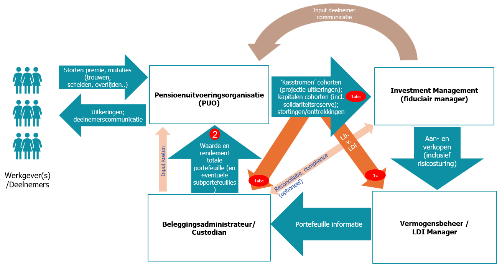
Figure 1 - Scope information exchange SPR
Legend (information flows/messages):
1a - Assets per cohort
1b - Cash flow (contributions and withdrawals)
1c - Pension projections / projected cash flows
2 - Returns and assets
Below, the roles of the various parties in the scheme are further explained:
-
The Pension Administration Organization (PUO) has the responsibility to allocate returns to the personal pension assets of participants (possibly via a collective payout phase), the solidarity reserve, any compensation deposit and possible other reserves, in accordance with the allocation rules set by the pension administrator.
Based on these personal pension assets, benefits are determined and projected in accordance with the pension administrator's principles.
The pension assets and projected benefits are delivered per cohort to the FM and/or the BA. The PUO processes premiums, benefits and changes in the participant base and handles participant communication. -
The Fiduciary Manager (FM) supports the pension administrator in establishing the integrated investment policy, ensures the execution of this investment policy and directs the operational asset managers. The FM will also maintain a (shadow) investment administration. For large pension administrators without an FM, the pension administrator itself is responsible for directing both internal and external asset managers.
-
The operational asset managers manage parts of the portfolio and are directed by the FM. It is possible that (for certain parts) the FM and the operational asset manager belong to the same organization.
-
The Investment Administrator/asset service provider (BA; usually additional services from the custodian) provides independent investment administration for the pension administrator. The BA calculates the total return on investments and (if needed) the return on various investment (sub)portfolios and delivers this to the PUO. As mentioned above, the FM can also maintain the leading investment administration. The investment administration is fed by the settlement of mutations in the portfolio, executed by the operational asset managers. This administration is reconciled with the FM if desired. The BA also often handles the preparation of regulatory reports or parts thereof.
3.2 SPR Information Flows
The information flows for SPR products between the FM, the BA and the PUO are:
-
Information from the PUO about assets, inflow and outflow of cash, and projected cash flows to be hedged (optionally per cohort) to enable the FM and BA to fulfill their roles.
-
Information from the BA or FM about returns that the pension administrator needs to arrive at a correct allocation to participants.
The information flow from the PUO to FM/BA (stream 1) is divided into three messages: 1a (assets), 1b (inflow and outflow) and 1c (projected benefits). Value and return information is sent to the PUO via Message 4. Return Information.
These messages are further detailed below.
3.2.1 Message 1. Assets (1a)
On a periodic (expected monthly) basis, the FM receives for a pension administrator (identified by puvCode) per scheme (identified by refKey) the total pension assets (startAmount) at the beginning of the period (startDate).
In addition to the information at the total level, the fiduciary can also receive per (age) cohort (identified by refKey) the pension assets (startAmount). For example, for the age cohort 25-29 years, the total of the personal pension assets at the start can be received.
With the cohort information, the FM can, if desired, make a total calculation and check the alignment with the information provided at the total/collective level against the fund's policy. This is useful for a robust transfer and audit trail depending on the agreements parties make. In accordance with the pension administrator's policy, rebalancing may be desirable in case of (large) deviations. This information can, in addition to the FM, also be provided to the BA/asset service provider to enable them to perform review and reporting activities using the leading investment administration.
Allocation to Portfolios
In addition to the total assets, the PUO can also communicate in this message the desired allocation of these assets across different portfolios to the asset manager. This provides the asset manager with important control information to act in accordance with the standard portfolio used by the PUO.
This allocation information can be provided at both the total level (under the pension scheme) and the cohort level. These are optional fields that can specify the exposure to, for example, a return or protection portfolio, both as an absolute amount (startExposureAmount) and as a percentage (startExposurePercentage). While the total level is particularly important for control, the information at the cohort level can be useful for reporting purposes.
Functional elaboration into a message: see chapter 6, specifically 0 Message structure 1. Assets (0001a).
The current message structure can be found on GitHub under "Wiki/Berichtenoverzicht"
For the date conventions regarding startDate, see the explanation for financialInformation.reportingPeriod in §6.3.
3.2.2 Message 2. Cashflow (1b, inflow and outflow)
On a periodic (expected monthly) basis, the FM receives for a pension administrator (puvCode) per scheme (refKey) the inflow (contributionAmount) during the period (on the contributionDate) and the outflow or as net cash flow (netAmount) during the period (on the netDate).
In addition to the information at the total level, the FM can also receive per (age) cohort (refKey) the inflow (contributionAmount) and outflow (withdrawalAmount) or as net cash flow (netAmount) over the period (startDate to endDate).
The inflow and outflow include not only premiums, value transfers and benefits, but also shifts between cohorts if applicable. A cohort can also be a birth year. An example is the personal pension assets of participants moving from the 25-29 age cohort to the 30-34 age cohort. The 'cohort' solidarity reserve, the 'cohort' compensation deposit and possibly other reserves will also be involved.
With the cohort information, the FM can, if desired, make a total calculation and check the alignment with the information provided at the total/collective level against the fund's policy. This is useful for a robust transfer and audit trail depending on the agreements parties make. This information can, in addition to the FM, also be provided to the BA/asset service provider to also enable them to perform review and reporting activities using the leading investment administration.
Two alternative fill patterns in Message 2 — use one of them
Message 0001b supports two mutually exclusive fill patterns per pension.scheme:
SPR route — the cash flow is included directly under pension.scheme as financialTransaction.cashflow (optional, 0..1). Cohort breakdown runs via pension.cohort, including netDate at the cohort level. When cohort breakdown is applied, the sum of the cohort amounts matches the amount at the scheme level: scheme.netAmount = sum(cohort.netAmount). See §6.3.1 for the integrity constraints.
FPR route — the cash flow is included per investment portfolio via pension.scheme → investment.portfolio → financialTransaction.cashflow. In this fill pattern, netAmount and netDate are mandatory at the portfolio level.
The two patterns are mutually exclusive: the presence of investment.portfolio excludes direct financialTransaction.cashflow under pension.scheme, and the presence of pension.cohort excludes the use of investment.portfolio.
Applications of the Cashflow Message
The standard offers the flexibility to use this message for two different purposes, which can coexist in practice:
-
Prospective Application (Forward-looking)
-
Purpose: Liquidity management. In this application, an estimate of the expected net cash flow for the upcoming period is provided. The net amount (
netAmount) serves as input for the actual monthly (de)allocation payment between the PUO and the asset manager. -
Characteristics: Typically a net amount at the scheme total level.
-
-
Retrospective Application (Backward-looking)
-
Purpose: Analysis and accountability. Here, the actually realized cash flows from a closed period are reported. This information is separate from the monthly allocation payment.
-
Characteristics: The cash flow can be provided as a net amount (
netAmount) or broken down (contributionAmount/withdrawalAmount). This variant lends itself to providing details at the cohort level.
-
The FM is responsible for investing the inflow or freeing up funds to finance the outflow. Inflow and outflow can be provided separately or as a net cash flow. When provided separately, the inflow and outflow dates must also be filled in; when provided as a net amount, only the cash flow date is needed.
The calculation method for the amount of the inflow or outflow depends on the preference of the pension administrator and the working method of the PUO. The FM does not need to be informed about the calculation methodology or about the period to which the data relates. After all, investments can never be made retroactively. For the audit trail, it may be desirable to record the period in the information exchange.
Functional elaboration into a message: see chapter 6, specifically 6.4.3 Message structure 2. Cashflow (0001b).
The current message structure can be found on GitHub under "Wiki/Berichtenoverzicht"
3.2.3 Message 3. Pension Projection (1c, projected benefits)
On a periodic (expected monthly) basis (projectionDate), the FM receives from a pension administrator (puvCode) per scheme (refKey) and per (age) cohort (refKey) the projected benefits (amount) based on the accumulated assets for future periods (expectedPensionPaymentDate).
For example, for the 25-29 age cohort, this mainly concerns the projected retirement pension in 39 years (assuming the statutory retirement age). In the information flow as of December 31, 2022, the first (benefit) cash flow for this cohort is then expected in 2061. This information is important for the FM to set up (the management of) the protection portfolio and generate the intended protection returns. The desired protection per age cohort (e.g. 25% for 25-29 years and 100% from 70 years) is decisive for the interest rate sensitivity to be hedged. It is no longer sufficient to base a projection of benefits only on the entire population in a pension scheme, because the interest rate risk is no longer shared by the complete participant population. If desired, the 'cohort' solidarity reserve, possibly the 'cohort' compensation deposit and other possible reserves can also be allocated protection returns. In that case, a (fictitious) cash flow profile must be drawn up for these cohorts. In addition to the individual projected benefits per cohort (including the reserves), a total projected benefit across the entire population can also be provided (amount). This equals the sum of the projected benefits across all cohorts per future period (expectedPensionPaymentDate).
Finally, the data exchange contains the cash flows to be hedged per scheme (hedgedExpectedPensionPaymentAmount) per future period. This equals the sum of the weighted projected benefits per cohort. The weighting factor equals the protection percentage per cohort. For example: the protection of the 25-29 age cohort is 25% and the protection of the cohort from 70 years is 100%. The projected benefits of the 25-29 age cohort are multiplied by 25% and added to the full projected benefits of the cohort from 70 years multiplied by 100%. In this way, a profile of the cash flows to be hedged is created. This exchange avoids misunderstandings regarding cash flows to be hedged and can, if desired, introduce a check in the process.
Functional elaboration into a message: see chapter 6, specifically 6.4.4 Message structure 3. Pension Projection (0001c)
The current message structure can be found on GitHub under "Wiki/Berichtenoverzicht"
For the unambiguous application of projectionDate and expectedPensionPaymentDate, see the explanation for financialInformation.reportingPeriod in §6.3.
Handling Empty Cohorts
The standard allows two approaches for cohorts with a value of 0:
- Include with an explicit value of
0— makes the distinction clear between "value is 0" and "data is missing." - Omit — keeps messages compact.
Parties must be able to process both variants. Agreements on this are documented between chain parties (TOM / SLA). For large messages, the chunking mechanism can be helpful. See GitHub issue #100.
3.2.4 Message 4. Return Information (2, Information Need of the PUO)
Information flow from BA/asset service provider to the PUO (stream 2 from Figure 1) in the SPR.
The PUO needs periodic (expected monthly) information about the achieved return to administer the Solidarity Premium Scheme.
Periodically, the PUO receives for the period (running from startDate to endDate) for a pension administrator (puvCode) per scheme (refKey) and per portfolio (refKey) the value at the beginning of the period (startAmount), the value at the end of the period (endAmount) and the return in portfolio currency and (optionally) expressed as a percentage (returnPercentage). The PUO is responsible for the allocation of returns to participants based on portfolio returns. Optionally, per cohort in the scheme (refKey), pension assets (startAmount), protection return (protectionReturnAmount) and excess return (excessReturnAmount) can also be shared with the PUO. Whether these optional elements are exchanged depends on the agreed roles and responsibilities between the cooperating parties. The starting point is that the PUO has the responsibility to allocate returns to the personal pension assets of participants, the solidarity reserve, any compensation deposit and possible other reserves, in accordance with the allocation rules set by the pension administrator.
The BA/asset service provider provides the necessary information to the PUO and bases itself on the independent investment administration. In an alternative governance model, the FM can provide this information to the PUO.
If the Solidarity Premium Scheme is structured with indirect (theoretical) protection return, information about the total return is in principle sufficient. The allocation of protection return is then not dependent on the realized return. The excess return to be allocated by the PUO can be calculated by the PUO based on the total return minus the allocated indirect (theoretical) protection return.
When the Solidarity Premium Scheme bases the protection return to be allocated on the direct (actual) achieved return, the PUO must have a breakdown of the achieved return. The BA/asset service provider must then provide the return for sub-portfolios (and optionally per cohort), with at least a distinction between the protection portfolio and the excess return portfolio. Depending on the way actual protection return is allocated to individual participants, a further breakdown of the protection portfolio into sub-portfolios may be desirable.
A (further) breakdown of portfolios may also be desirable for the purpose of communication about achieved returns to participants, reconciliation purposes and any legal obligations. This depends on the setup desired by the pension administrator.
The information exchange for the solidarity scheme based on the direct (actual) achieved return can also be used for an exchange in a specific implementation variant of the Flexible Premium Scheme. This choice will mainly be made by parties that use a similar method of return allocation for the Flexible Premium Scheme as in the Solidarity Premium Scheme based on actual returns. For each cohort, an actual protection return and excess return are then delivered to the PUO as an amount and optionally as a percentage.
Return Information at Multiple Levels in a Single Message
Within a single Message 4, multiple types of return can be included: total return (total), protection return (matching) and excess return (return). The refKey identifies per block which type of return or which portfolio is concerned. It is not necessary to send a separate message per type. The standard does not establish a formal relationship between the three types; the assumption that matching + return = total is not enforced.
See GitHub issue #109.
[^1]: Note: the SPR data model, which is essentially a decomposition model, can also be used for FPR data exchange. This is logical when the implementation of an FPR scheme is not unitized but is also based on return decomposition, see 4.6.
Functional elaboration into a message: see chapter 6, specifically 6.4.5 Message structure 4. Return Information (00002)
A graphical overview of the message structure can be found on GitHub under "Wiki/Berichtenoverzicht". The JSON schemas and this manual are, however, leading.
4 Processes & Information Flows – Flexible Premium Scheme
4.1 Introduction
This chapter describes the necessary information exchange between the involved parties to robustly implement the Flexible Premium Scheme. Based on the principles and the scope, the required data set has been established.
In directing the process of the Flexible Premium Scheme, a distinction can be made between two models for "ordering" investments that are applied in the operational cooperation between pension administration and asset management:
-
Model 1, a simpler, direct order model and
-
Model 2, a more extensive, layered order model.
A model is also conceivable in which the SPR data model can be used for FPR data exchange. In this model, FPR is structured similarly to SPR-actual where only multiple risk profiles per cohort are supported.
4.2 Model 1: Simpler, Direct Order Model
In this model (see Figure 2), the investments (bottom layer in Figure 2) consist only of investment funds that are directly tradable via a platform. These concern trading platforms (e.g. AllFunds, Fundsettle, etc.) where investment funds can be traded directly. This model is currently applied mainly for Individual DC schemes. The direct order model can be executed by the Pension Administration Organization (PUO) itself.
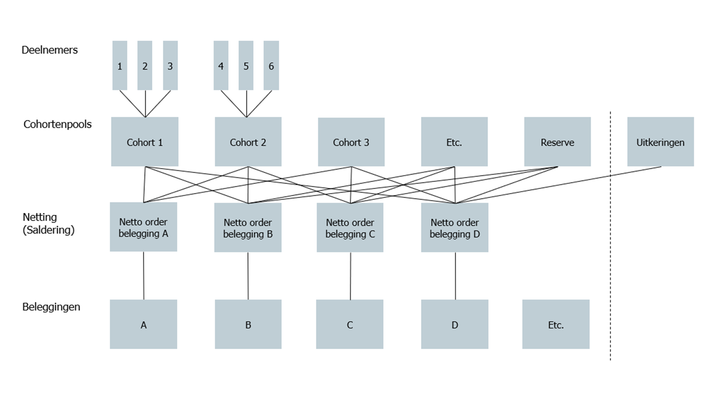
Figure 2 – Schematic representation of the direct order modelWhen applying this model, the PUO translates mutations at the participant level into the required (netted) transactions in the investment funds of operational asset managers and has them executed via a trading platform. Such a setup can also be implemented jointly with the asset service provider/custodian, where the PUO translates participant-level mutations into netted mutations and the asset service provider/custodian handles the execution of transactions in investment funds via a trading platform, see Figure 6 - Model 1b: the PUO gives investment orders to an intermediary (order platform: custodian, fiduciary). When compiling the orders, aspects such as the minimum order size per investment product, the settlement cycle and the associated financial flows are taken into account.
In the direct order model, the pension administrator is generally supported by the Fiduciary Manager (FM) regarding the design of the lifecycle(s) and their composition (selection and monitoring of underlying investments). Special attention should be paid to the process of changing the composition of investments (replacement of investment funds). Such changes result in transition activities for the pension administrator and/or asset service provider/custodian. More specifically: if an investment product (which can be an investment fund, a virtual pool, or a mandate) is replaced, removed, or added, the PUO will adjust and process this. If adjustments are made within an investment product, this is not relevant to the PUO and only affects the provider of the product.
In the direct order model, a cohort pool consists of a group of participants who have the same investment allocation based on the lifecycle principle (less investment and interest rate risk as the retirement date/end of the investment horizon approaches). A cohort pool can be used to distinguish between participant groups. This can be based on time (age, period until retirement, etc.) but also on a characteristic such as active, deferred, disabled, etc. The number of pools is basically unlimited. As many pools are created as needed to distinguish the right participant groups that require their own investment mix. Below is a simple example with a division into three lifecycles based on birth years and the established allocation between equities and bonds. The administration of the cohort pool is optional and can be managed by the PUO, the Investment Administrator/asset service provider (BA), or elsewhere. The allocation of weights (percentages) is often determined by the FM.
A cohort pool is an administrative grouping consisting of a group of participants who, for example based on the lifecycle principle, have the same investment allocation.
| Lifecycle defensive | Lifecycle neutral | Lifecycle offensive | ||||
|---|---|---|---|---|---|---|
| Cohort pool | % Equities | % Bonds | % Equities | % Bonds | % Equities | % Bonds |
| Birth year 1987 | 90 | 10 | 95 | 5 | 100 | 0 |
| Birth year 1986 | 88 | 12 | 94 | 6 | 98 | 2 |
| Birth year 1985 | 86 | 14 | 93 | 7 | 96 | 4 |
| Birth year 1984 | 85 | 15 | 91 | 9 | 94 | 6 |
| Birth year 1983 | 84 | 16 | 89 | 11 | 92 | 8 |
| Birth year 1982 | 83 | 17 | 87 | 13 | 90 | 10 |
| Birth year 1981 | 82 | 18 | 85 | 15 | 88 | 12 |
| Birth year 1980 | 81 | 19 | 84 | 16 | 86 | 14 |
| Birth year 1979 | 80 | 20 | 82 | 18 | 84 | 16 |
Figure 3 - Example of cohort pools and lifecycles
The example in Figure 3 shows how birth years and thus ages can influence the allocation of investments within lifecycles.
When a participant ages by one year, a so-called age rebalance is performed. Each participant is placed in the next cohort pool.
The participant's investment mix is then adjusted to that of the new cohort. In the example above (Figure 3), regardless of the chosen risk profile, the share of equities is reduced and the share of bonds is increased. This leads to concrete buy and sell orders towards the product providers.
Another form of rebalancing is target-weight rebalancing. This can be performed when the actual allocation of investments falls outside pre-established bandwidths due to market movements. This form of rebalancing also leads to buy and sell orders.
A group (cohort) of participants can be composed in various ways. Generally, three aspects play a role:
-
Age.
-
Status.
-
Investment profile.
For the age aspect, the following can be used, for example:
-
Age.
-
Period until retirement date/end of investment horizon.
-
Birth year/month.
For status, a distinction can be made between:
-
Accumulating versus decumulating.
-
Active/Deferred/Disabled/Decumulating/etc.
Netting of investments takes place across the cohort pools according to the instructions for the investment transactions. In the direct order model, this takes place "in the spaghetti" (see Figure 2: Schematic representation of the direct order model) between the cohort pools and the investments. The risk-sharing reserve is considered a separate cohort pool that invests in investment products according to its own investment policy.
4.3 Model 2: More Extensive, Layered Order Model
In the "More extensive, layered model" (Figure 4), the investments can also consist of non-daily tradable and/or non-platform-tradable (illiquid) funds or investment mandates. This model is already applied for larger Collective Individual DC (CIDC) schemes.
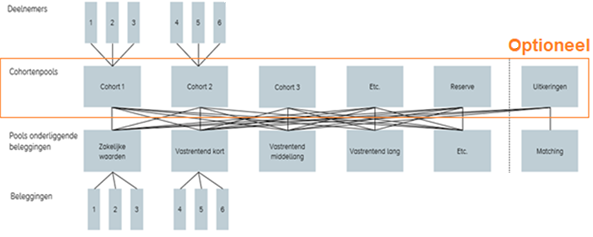
Figure 4 - Schematic representation of the layered order modelIn this model:
-
Participants invest in cohort pools according to the chosen lifecycle and composition of cohorts. The cohort pools in turn invest in investment pools. These investment pools can consist of various underlying investments (liquid, illiquid, funds and mandates). The cohort pools invest in investment pools according to the strategic allocation within the cohort pools[^2]. To make the allocation to participants robust and traceable, units are issued and unit values are calculated for the various (layered) pools. The participant's assets can thus be traced exactly to the pro-rata share of the underlying investments. The layer with cohort pools is optional and can reflect the structure of the investment policy and/or the intended function separation. If this layer is absent, the PUO must administer per participant which participations in the various investment pools are held. In the simpler FPR Direct Order model, the cohort pools and/or investment pools are not needed.
The investments are then daily tradable and the prices are also available daily. As a simple example for a cohort pool, Figure 3 also applies, where "% Equities" and "% Bonds" are replaced by, for example, "% Return-seeking assets," "% Fixed income, short duration," "% Fixed income, long duration," etc. -
The allocation of returns can be done by the PUO or the administrator of the cohort pools and investment pools:
-
The PUO has the responsibility to explicitly allocate returns in accordance with the allocation rules set by the pension administrator to: the personal pension assets of participants, the risk-sharing reserve, any compensation deposit and possible other reserves. For this purpose, the PUO processes mutations in the participant base and the allocation of personal pension assets to cohort pools. When composing the cohort pools, the lifecycle chosen by the participant (offensive, neutral, defensive, etc.) is taken into account. Paid premiums and possible set-offs such as with the risk-sharing reserve are also considered. Based on these personal pension assets, benefits are projected in accordance with the pension administrator's principles. In addition, the PUO handles participant communication.
-
The administrator of cohort pools and investment pools processes the allocation and administration of cohort pools as provided by the PUO. In addition, they handle the allocation to investment pools (e.g. return-seeking assets, fixed income). For this purpose, both for the cohort pools and the investment pools, unit values are calculated and the number of units is administered. For cohort pools, we refer to these as participation values; for investment pools, as unit values. Premiums, withdrawals and rebalancings are included. This role can optionally also be performed by a PUO or by a BA/asset service provider. The participation values and the number of participations of the cohort pools form the basis for the PUO to explicitly allocate assets to participants. The administrator of cohort pools and investment pools receives monthly the positions from the leading administration of the BA of the investment pools, supplemented with the positions from the (shadow) administration of the FM. These positions are reconciled[^4] with the positions in the own administration of the administrator of cohort pools and investment pools.
-
There can be a dual cohort administration. The first lies with the PUO and concerns the participant & cohort administration. The second lies with "an administrator," which can be the PUO, another specialized party, or the BA/asset service provider. In this second role, the relationship between the cohort pools and the investment pools is established. This latter administration can also be called a middle-office administration and is optional. If this does not apply, the PUO administers at the participant level in which investment pools the participant invests and provides the necessary information directly to the FM.
-
The FM supports the pension administrator in establishing the integrated investment policy. They ensure the execution of this investment policy and direct the (operational) asset managers. The FM will also maintain a (shadow) investment administration.
-
The asset managers manage parts of the portfolio. They are directed by the FM. It is possible that (for certain parts) the FM and the operational asset manager belong to the same organization.
-
The BA/asset service provider (usually additional services from the custodian) provides independent investment administration of the investment pools for the pension administrator. This administration is fed by the settlement of mutations in the portfolio of the investment pool, executed by the operational asset managers who are instructed by the FM. This investment administration is reconciled with the (shadow) administration of the FM.
In the process for "Model 2: more extensive, layered order model," a distinction is made between an accumulation phase (left of the dotted line in Figure 4) and a payout phase (right in Figure 4).
Insofar as the payout phase is entirely placed with an insurer, the data exchange is out of scope of this elaboration. In that case, the insurer receives the participant's capital via an outgoing value transfer from the PUO, with which a pension benefit is purchased from the insurer.
The payout phase executed by a PUO is in scope. In the payout phase, participants have the choice of continuing to invest (with a variable pension benefit) or a fixed pension benefit. With a variable benefit, the pension fund can choose a model with an individual payout phase or a collective payout phase.
For an individual payout phase, the data exchange for the continued investment variant can be set up in the same way as for the accumulation phase (where at older ages, for example, more is invested in shorter-duration fixed income).
For a collective payout phase (all retirees in one cohort), for both fixed and variable benefits, aligning the interest rate sensitivity of the investments (in a matching portfolio) with the collective interest rate sensitivity of projected benefits is important. It is possible that the accumulation phase takes place in model 1 (direct order model) and the payout phase via model 2 (more extensive order model). It is also possible to choose to invest individually in the payout phase and later switch to a collective payout phase. This switch has no impact on the data fields and/or data exchange between parties.
For the payout phase (executed by a pension administrator), the FM will set up (the management of) a matching portfolio. For the required data exchange, the PUO sends on a periodic (expected monthly) basis per scheme the projected cash flows to be hedged per cohort pool to the FM. The data exchange will be structured in accordance with data exchange 1b from the SPR.
4.4 Information Flows FPR - Model 1 (1a and 1b)
The information exchange for model 1 can be split into a variant 1a where the PUO invests directly and a variant 1b where the PUO invests via an order platform. Strictly speaking, from the PUO's perspective there is no distinction between both variants, but for clarity both variants are explained separately. This is schematically and simplified shown in Figure 5 and Figure 6. Via a broker, a PUO could, for example, trade ETFs on behalf of the pension fund if these are part of the agreed investment mix.
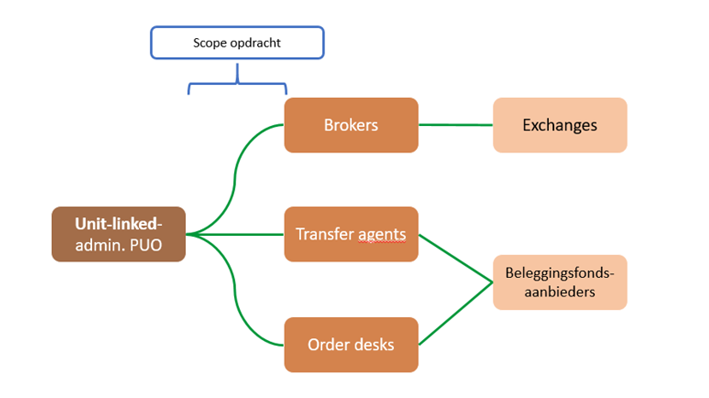
Figure 5 - Model 1a: the PUO invests directly with various market parties
The data exchange, indicated as "scope" in Figure 5, takes place in this model between the PUO on one side and the various types of market parties on the other.
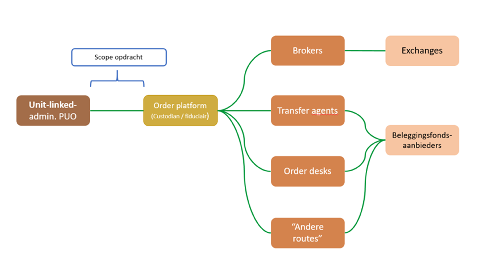
Figure 6 - Model 1b: the PUO gives investment orders to an intermediary (order platform: custodian, fiduciary)
Data exchange (scope) from Figure 6 takes place exclusively between PUO and order platform.
The data exchange for FPR model 1 (a and b) proceeds via the following 2 messages for order processing.
In addition to the order messages, the FPR also uses Message 2. Cashflow (0001b) for periodic cash flow information. For FPR use, the cash flow runs per investment portfolio via pension.scheme → investment.portfolio → financialTransaction.cashflow. In this fill pattern, netAmount and netDate are mandatory at the portfolio level. See §6.4.3 for the message structure.
4.4.1 Message 5. Order Instruction (00541)
Information flow from PUO to Brokers/Transfer Agents/Order Desks (model 1a and 1b)
This information flow from PUO to Brokers/Transfer Agents/Order Desks contains the minimum set of data required to send an order to an order processing party. A switch can also be executed with this message.
The PUO submits orders at the investment fund level. The provider of the fund executes the ordering in the underlying investments itself. This can include listed and illiquid investments, among others.
Switch convention. A switch consists of two linked orders: one with buySellId = switchfrom (the fund being exited) and one with buySellId = switchto (the fund being entered). The direction of the transaction follows exclusively from buySellId; tradeAmount and tradeQuantity are always specified as positive values. The two switch legs are linked to each other via financialInformationRef, which refers to the refKey of the other leg. The field switchType indicates whether it is a simultaneous (one-day) or sequential (sequential) switch. See GitHub issue #115.
Order instruction: tradeAmount or tradeQuantity. Per individual trade instruction, exactly one of tradeAmount or tradeQuantity must be filled in. Filling in both fields simultaneously is not allowed; leaving both empty is also not allowed. If an instruction has both an amount and a quantity component, these are recorded as separate trade records. See GitHub issue #116.
Functional elaboration into a message: see chapter 6 and specifically 6.4.6.
4.4.2 Message 6. Order Confirmation (00542)
Information flow from Brokers/Transfer Agents/Order Desks to PUO (model 1a and 1b)
The confirmation data of the order is returned from the order processing party to the PUO. For switches, Message 6 confirms the same structure as Message 5, including switchType and financialInformationRef. See GitHub issue #115.
Functional elaboration into a message: see chapter 6 and specifically 6.4.7.
4.5 Information Flows FPR - Model 2
The information exchange for model 2 (more extensive, layered order model) can be schematically simplified as follows.
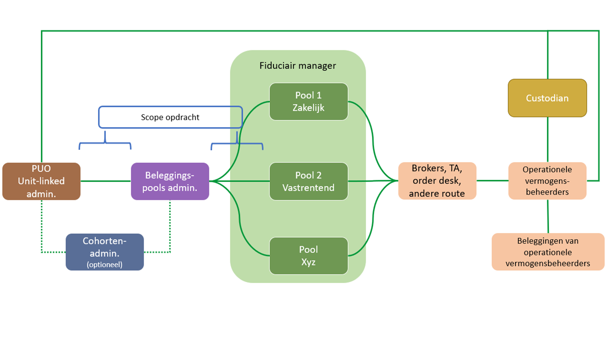
Figure 7 - Model 2: the PUO has investments managedThe scope outlined in Figure 7 leads to the exchange of various information flows. The standardized data exchanges that fall within the scope are indicated by red arrows in the process flow figures below. The data needed for these different information flows/processes is described in the paragraphs below.
Note: Figure 8 and Figure 9 are indicative process flow diagrams. The time indications are indicative and can be filled in differently per client chain between all involved parties; the order of the steps is, however, directional. This document only covers the information flows.
The information flow of model 2 is shown below in two process flow diagrams that show the two configuration variants for the collective payout phase (CVP): a unitized variant (Figure 8) and a non-unitized variant (Figure 9)[^3].
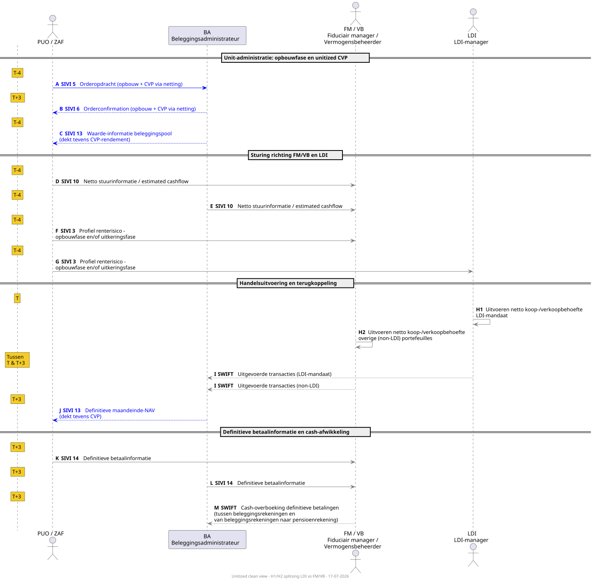
Figure 8 — Process flow FPR model 2: unitized variant (accumulation and CVP via netting) Full scale view (SVG)
Explanation of Figure 8: unitized variant (accumulation and CVP via netting)
In the unitized variant, the investment flows of the accumulation phase and the collective payout phase (CVP) are combined via netting. The CVP is administered in units, so that the same order flows (SIVI 5/6) cover both accumulation and CVP mutations.
The process flow runs in three phases with four actors: PUO/ZAF, BA (investment administrator), FM/VB (fiduciary manager/asset manager) and LDI manager. Under PUO, in this context, the self-administering fund (ZAF) is also included.
Color coding: grey arrows are generic flows that are identical in both variants. Blue arrows mark flows that in the unitized variant have a broader meaning because they cover both accumulation and CVP. The time indications (T-4, T, T+3) are indicative.
Phase 1 — Unit administration (T-4 and T+3): The PUO sends an order instruction (SIVI 5, step A) to the BA on T-4. After trade execution, the order confirmation (SIVI 6, step B) follows back to the PUO on T+3. The BA also delivers on T-4 the investment pool value information (SIVI 13, step C), which in the unitized variant also covers the CVP return.
Phase 2 — Direction towards FM/VB and LDI (T-4): The PUO/ZAF (step D) and the BA (step E) send net control information (SIVI 10) to the FM/VB. The PUO sends the interest rate risk profile (SIVI 3, steps F and G) to FM/VB and LDI manager.
Phase 3 — Trade execution, feedback and payment information (T to T+3): The LDI manager executes on T the net buy/sell need on the LDI mandate (step H1), aimed at the protection return. The FM/VB monitors the LDI manager and executes the net buy/sell need on the other (non-LDI) investment portfolios (step H2). Executed transactions flow via SWIFT (step I) back to the BA. After receipt of the definitive month-end NAV (SIVI 13, step J), the definitive payment information (SIVI 14, steps K and L) follows, and the cash settlement via SWIFT (step M).
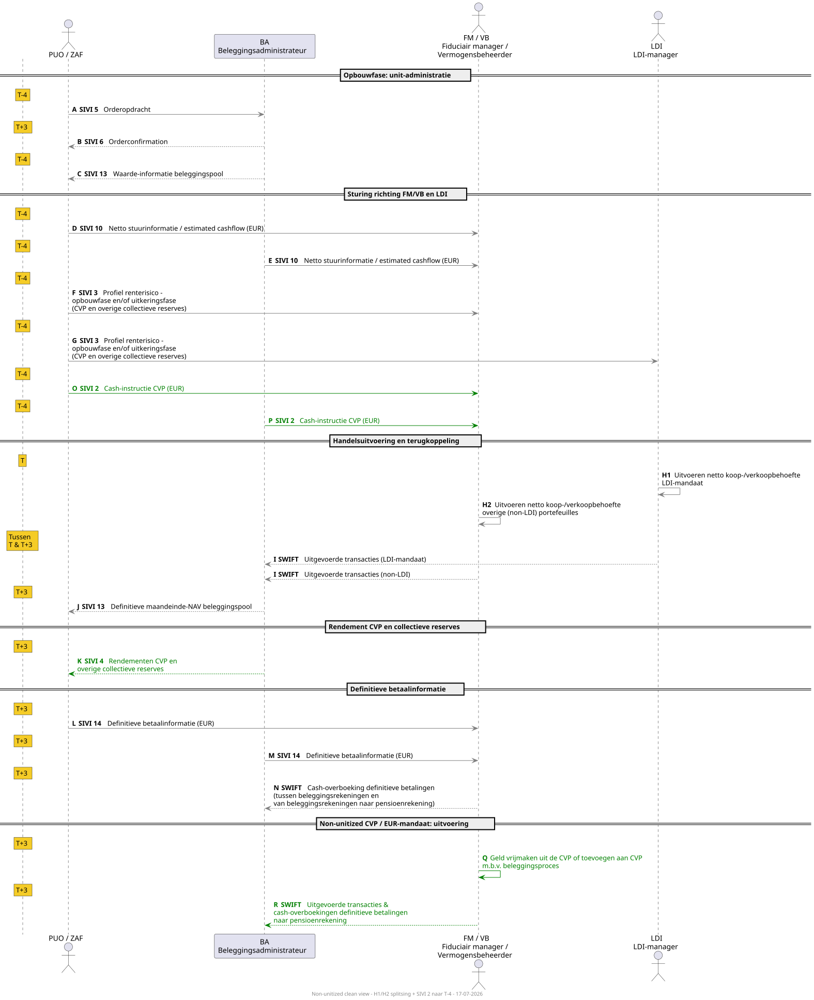
Figure 9 — Process flow FPR model 2: non-unitized variant (CVP as EUR mandate) Full scale view (SVG)
Explanation of Figure 9: non-unitized variant (CVP as EUR mandate)
In the non-unitized variant, the collective payout phase (CVP) is managed as a separate EUR pool, independent of the unitized accumulation phase. This leads to additional information flows.
Color coding: grey arrows are generic flows (see Figure 8 for the full color coding). Green arrows mark the non-unitized-specific flows: extra messages because the CVP is a separate EUR pool.
The accumulation phase (steps A through J) runs identically to the unitized variant. The difference lies in the additional green flows:
- Cash instruction CVP (steps O and P, T-4): the PUO or BA sends cash instructions in EUR to the FM/VB via SIVI 2, simultaneously with SIVI 5 (order instruction).
- Return CVP (step K): the BA sends returns for the CVP and other collective reserves to the PUO via SIVI 4.
- Investment process CVP (step Q): the FM/VB frees up or adds funds to the CVP via the investment process.
- SWIFT feedback (step R): executed transactions and cash transfers flow via SWIFT back to the BA.
These additional flows are necessary because the CVP does not use units — returns and cash flows are handled separately in EUR.
4.5.1 Message 7. Balance Adjustments (00551), Information Need of the Cohort and Investment Pool Administrator
Discontinued from release 2027. This message is no longer active in the release 2027 message set. See GitHub issues #99, #119, #121.
4.5.2 Messages for Reconciliation Information
Discontinued from release 2027. Messages 8 and 9 in this section are no longer active in the release 2027 message set. See GitHub issues #99, #119, #121.
4.5.3 Message 10. Control Information Investment Pools (00553)
See the explanation for Figure 8 and 9 (steps D and E). Functional elaboration: see §6.4.11.
4.5.4 Message 11. Rebalancing Information (00554), Rebalancing Cohort Pools
Discontinued from release 2027. This message is no longer active in the release 2027 message set. See GitHub issues #99, #119, #121.
4.5.5 Communicating Values per Investment Pool and per Cohort Pool
See the explanation for Figure 8 and 9 (steps J, K and L).
4.5.5.1 Message 12. Value Information Cohort Pool (00555a)
Discontinued from release 2027. This message is no longer active in the release 2027 message set. See GitHub issues #99, #119, #121.
4.5.5.2 Message 13. Value Information Investment Pool (00555b)
See the explanation for Figure 8 and 9 (step J). Functional elaboration: see §6.4.14.
4.5.6 Message 14. Payment Information (00556)
See the explanation for Figure 8 and 9 (steps K and L). Functional elaboration: see §6.4.15.
4.5.7 Message 15. Corporate Actions (00557)
Information flow from the asset management chain to the PUO
Message 15 is used for communicating corporate action events on investment products from the asset management chain to the Pension Administration Organization (PUO). The message is intended for situations where such events are processed within the asset management administration but are not automatically visible within the PUO's administration.
The information is provided by the party within the asset management chain that is responsible for recording the relevant event. Depending on the chain's configuration, this can be, for example, a BA, FM, or other asset management party.
The message is primarily intended for:
- cash dividend;
- rebate;
- increase or decrease of units;
- capital and unit shifts resulting from collateral calls or collateral returns;
- corrections to previously sent corporate actions.
Additionally, the message can be used for supplementary corporate action-related changes, such as product changes or other administrative adjustments, insofar as these fall within the agreed implementation of Message 15.
This enables the PUO to:
- keep its own administration synchronized with the asset management administration;
- correctly process cash and unit mutations;
- administratively record corporate action events;
- prevent differences between PUO and asset management administrations.
Modeling Rebate
A rebate is modeled as a corporate action with corporateActionType = rebate (code list AFDCAE). The rebate amount is recorded in cashDividendTotalAmount and/or cashDividendPerUnitAmount, the same attributes that are also used for cashDividend. The distinction between a cash dividend and a rebate follows exclusively from the value of corporateActionType.
Functional elaboration into a message: see chapter 6 and specifically 6.4.16.
See GitHub issue #87.
4.6 Use of SPR Messages in FPR
Within a Flexible Premium Scheme (FPR), in addition to the individual, 'unitized' cash flows, there are also collective premium flows. These are cash flows that do not belong to a single specific participant, such as risk premiums, contributions to reserves, or withdrawals from a collective payout pool.
The standard FPR messages (5 through 15) are purely aimed at the unitized world and do not support these collective flows. To address this, it has been agreed that parties will revert to the proven SPR messages 1, 2, 3 and/or 4 for the exchange of this information. This method applies to both the direct (Model 1) and the layered (Model 2) FPR order model.
4.7 Feedback Message (& Resending)
Purpose and Function
When exchanging messages, it is essential that the sender knows whether a message has been correctly received and processed. The feedback message has been developed to provide this certainty in the following situations:
-
For asynchronous processing: To provide the definitive status (both success and failure) of a message after background processing is complete.
-
For synchronous processing: To provide immediate, detailed error information when a message cannot be accepted.
A feedback message is therefore always used to specify errors. For successful processing, it is only sent as part of an asynchronous process. For successful synchronous processing, an HTTP 200 OK status code is sufficient.
Structure of the Feedback Message
The feedback message has a compact, fixed structure optimized for communicating status information. The image below (also available on GitHub under message overview and in the MessageStructureView of the message) shows the hierarchical structure and the main entities.
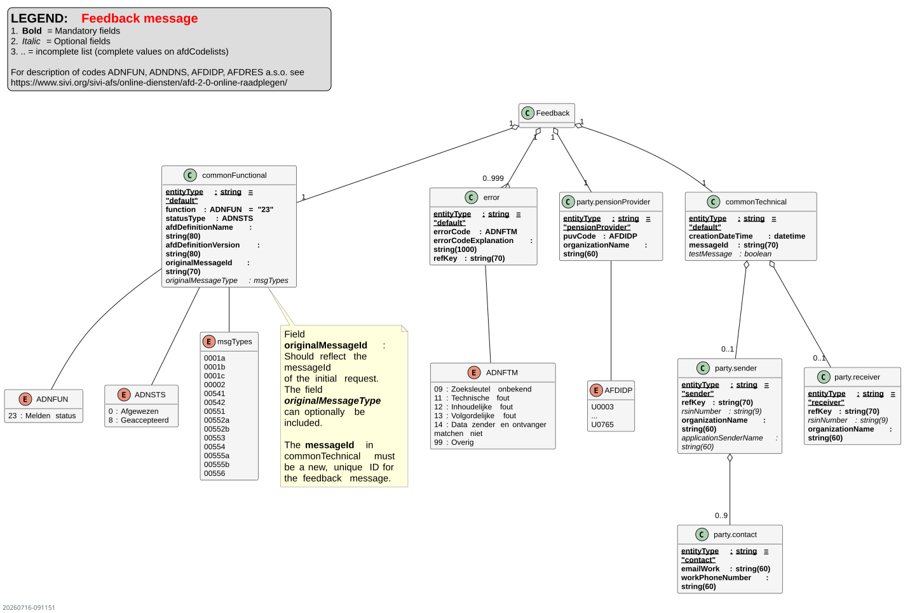
The core of the message is formed by the following components:
-
commonTechnical: Contains the technical identification of the feedback message itself, such as a new, unique
messageId. Additionally, an optionalpartyblock can be included with information about the sender and receiver of the message, to support routing and for consistency with othercommonTechnicalstructures (#90). -
commonFunctional: Contains the functional metadata, including:
-
statusType: The status of the original message: Accepted (8) or Rejected (0).
-
originalMessageId: A mandatory reference to the
messageIdof the message to which this feedback pertains. -
originalMessageType: An optional field indicating the type of the original message, to simplify routing at the receiver.
-
error: An optional block that, in case of rejection, contains an
errorCodeand anerrorCodeExplanation. -
party.pensionProvider: Identifies the pension administrator to whom the original message pertained.
For a detailed specification of all attributes and code lists, see sections 6.5 and 6.4.16.
Interaction Patterns and Process Flow
The technical handling of the feedback is defined in the OpenAPI Specification (OAS) and follows six fixed scenarios. These describe both synchronous and asynchronous processing, including the handling of errors and "panic" situations where the feedback loop itself fails.
A visual overview of these scenarios can be found on GitHub: Feedback activity diagram.
The scenarios are explained functionally below.
-
Synchronous validation - Success: Immediate 200 OK.
-
Synchronous validation - Error: Immediate 400 Bad Request with a feedback message in the body.
-
Asynchronous validation - Success: First 202 Accepted, later followed by a callback with an "Accepted" feedback message.
-
Asynchronous validation - Error: First 202 Accepted, later followed by a callback with a "Rejected" feedback message.
-
Panic scenario (after Error): The callback with "Rejected" feedback is not accepted by the recipient (400 Bad Request).
-
Panic scenario (after Success): The callback with "Accepted" feedback is not accepted by the recipient (400 Bad Request).
In panic scenarios (5 and 6), manual coordination via another channel is necessary.
Protocol for Corrections and Resending
The feedback mechanism dictates the protocol for correcting messages. This protocol is based on the fundamental principle:
"Once-accepted messages are not unilaterally corrected."
The received feedback message is the primary form of communication that determines how a correction should be handled.
Scenario 1: Correction after an Error Message (Feedback "Rejected")
If the receiving party has sent a feedback message with the status "Rejected," this serves as the official request for correction.
-
The receiving party expects a new, corrected message.
-
The sending party may and must send a corrected message without further, separate coordination.
Scenario 2: Correction after Acceptance of a Message
This scenario occurs when a message has been successfully accepted (via a 200 OK) and the sending party subsequently discovers an error. Since there is no official trigger for a correction, unilaterally sending a new version of the message (a correction message) is not permitted.
A message with an already-used messageId is treated by the receiving party as a duplicate message. This concerns, for example, reuse of an existing messageId or a network retry of a previously processed message.
A duplicate message is rejected with: - HTTP 400 Bad Request - a Feedback message in the response body
The Feedback message contains at minimum: - originalMessageId - statusType = Rejected (0) - errorCode - errorCodeExplanation
The errorCode identifies the type of error. The errorCodeExplanation describes that a previously used or non-unique messageId is involved.
In such situations, the sending party must contact the receiving party to discuss the situation. The outcome of this consultation determines the follow-up action. Possible solutions are:
- Ad hoc agreement for resending.
- Correction in the next regular delivery.
- Following an agreed-upon incident procedure.
Functional Rejection in Order Processing
An order that is functionally non-executable — for example due to an unknown fund or an invalid combination of instruction fields — is communicated back by the receiving party via the feedback message. The feedback message contains:
- statusType = Rejected (0)
- an errorCode that classifies the type of rejection
- an errorCodeExplanation with a readable explanation
The feedback follows the synchronous or asynchronous interaction patterns as described above. See GitHub issue #132.
Force Majeure and Deadlines
Force majeure situations fall outside the scope of the VB-PUO standard. The standard does not provide a separate message or status code for force majeure; the handling thereof is a matter of bilateral agreements between chain parties, for example in an SLA or TOM.
Additionally, the standard does not prescribe normative deadlines for feedback. The speed at which a feedback message is sent after receipt of a content message is a matter of operational agreements between the involved parties. See GitHub issue #132.
[^2]: For example, within cohort pool A, the (strategic) allocation of investments can be 30% investment pool I and 70% investment pool II. For cohort pool B, the allocation can be 40:60.
[^3]: In appendix 10.3 "Process flow & data exchange FPR," the process flow diagrams are included in a larger format.
[^4]: Reconciliation between FM and BA is not in scope for the data exchange, but the reconciliation between the BA, the FM and the PUO is in scope for the data exchange.
5 Approach/Setup of the Data Standard
In this chapter we explain how we arrive at the specifications of the messages.
Steps to arrive at the functional specifications of the messages:
-
Create descriptions of the processes and information flows.
-
Compile a list of entities and associated attributes.
-
Determine the base structure of the messages.
-
Indicate which messages are needed.
-
Create a cross-reference table between the base structure and the messages.
We explain the relationship with SIVI AFS. We use the building blocks from SIVI AFS (AFD 2.0) to arrive at technical specifications.
5.1 Create Descriptions of the Processes and Information Flows
To standardize the interfaces including message exchange between parties in the chain(s), we create descriptions of the various chain processes as they take place, including the desired functionality at the chain actors at a high level. We also indicate which information flows are relevant. Visualized diagrams of the information flows between parties serve as an aid.
The processes & information flows are described in detail in the report ''Results of research: Standard for data exchange pension administration & asset management parties'':
Chapter 4: Solidarity Premium Scheme.
Chapter 5: Flexible Premium Scheme.
See also chapter 3 of this manual.
5.2 Compile a List of Entities and Associated Attributes
Create definitions of entities and attributes. Where possible, use code lists, with preference for existing code lists. Also indicate the required relationships between data elements. Each entity and each attribute also receives a label at the technical level. The labels are included with their corresponding values in a message. This allows a computer to automatically process the data from the message. Figure 10 shows the building blocks of a data model.
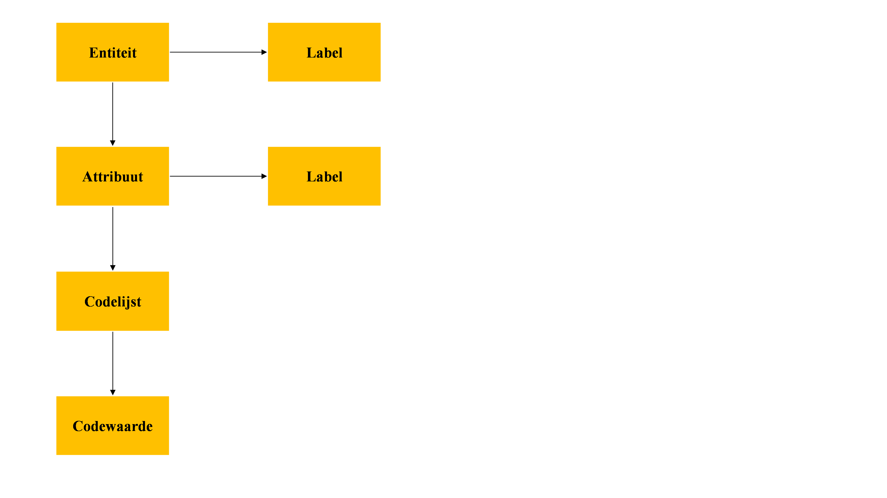
Figure 10 – Building blocks of the data model
5.3 Determine the Base Structure of the Messages
Also clarify the composition of the messages, for example:
| Entity A | M |
| Entity B* | M, 1… 999 |
| Entity C | M, 1 |
| Entity D | O, 1 |
Entity A occurs once, mandatory.
Entity B occurs at least 1 time and at most 999 times.
Entity C is nested under Entity B and occurs once, mandatory.
Entity D is nested under Entity B and occurs at most 1 time.
5.4 Indicate Which Messages Are Needed.
Based on the descriptions of the processes and information flows, determine which messages are needed.
5.5 Create a Cross-reference Table Between the Base Structure and the Messages.
For each message, indicate in the table which entities/attributes apply. Indicate the number of repetitions (entities) and also indicate which attributes must be filled in. It is also possible to make selections from code lists, meaning to indicate which code values apply.
Figure 11 below shows how we compose multiple base structures from a collection of entities/attributes and how we can derive multiple functional messages from each base structure. Finally, we deliver technical message specifications. Figure 11 illustrates this.
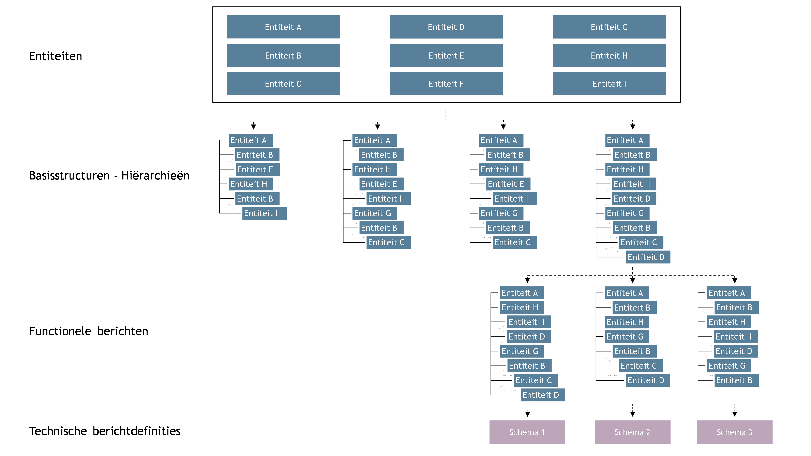
Figure 11 - From entities to base structure to functional messages to technical message definitions
5.6 Relationship with SIVI AFS
The English-language AFD 2.0 is part of the SIVI All Finance Standard. Via AFD 2.0 Online Raadplegen you can search online for all entities, attributes and code lists. Additionally, you will find an overview of AFD 2.0 in XLS format. Pensions are already present in AFD 2.0 to a certain extent. This is partly related to the mapping that SIVI developed for the Ockto Data Model. Ockto has a connection to the pension register. The use of JSON is a foundational principle in AFD 2.0.
AFD 2.0 contains building blocks that we use when specifying the entities and attributes for the data exchange standard between asset management and pension administration. We indicate which AFD 2.0 building blocks we use and which building blocks are missing. SIVI can then add the latter to AFD 2.0. Besides entities/attributes, this may also involve code lists.
Chapter 6: Functional Specifications
This chapter contains the detailed functional specifications.
This chapter contains the functional specifications:
- Data Dictionary
- Base Message
- Cross-reference: Base Message & Messages
6.1 Data Dictionary
An overview of all entities and their purpose. This section will link to detailed pages or files for each entity.
| Entity.entitytype |
|---|
| commonTechnical.default |
| party.sender |
| party.contact |
| party.receiver |
| commonFunctional.default |
| party.pensionProvider |
| pension.scheme |
| financialInformation.reportingPeriod |
| financialTransaction.payment |
| party.creditor |
| financialTransaction.cashflow |
| financialTransaction.expectedPayment |
| pension.cohort |
| pension.cohortPool |
| investment.pool |
| investment.portfolio |
| investment.investmentDetails |
| financialTransaction.trade |
| error.default |
| document.default |
| investment.corporateAction |
| chunking.default |
6.2 Entity Types
This section describes the various entities and the attributes within those entities.
Below is an explanation of the entities. This information is derived from AFD 2.0, which can be consulted via this link.
Note: The entity type is mandatory.
| Entity.entitytype | Description |
|---|---|
commonTechnical.default |
This entity contains technical details about sending and storing messages. It forms the basis for the technical aspects within the messaging system. |
party.sender |
The "party.sender" entity refers to the sender of the message. |
party.contact |
The "party.contact" entity represents a contact person within a legal entity. |
party.receiver |
This entity represents the recipient of the message. |
commonFunctional.default |
This entity contains domain-specific information about the content of the message. |
party.pensionProvider |
This entity represents a pension provider (pension fund, insurer, or PPI). |
pension.scheme |
This entity contains data at the level of the pension scheme or plan. |
financialInformation.reportingPeriod |
This entity relates to reporting periods, time intervals, and other generic dates. |
financialTransaction.payment |
This entity/entity type combination contains data about a payment. |
party.creditor |
This entity represents the creditor; the recipient of the payments. |
financialTransaction.cashflow |
This entity deals with financial transactions related to pensions, specifically focusing on cash flows. |
financialTransaction.expectedPayment |
This entity contains information about projected future cash flows/payments. |
pension.cohort |
This entity contains information about specific target groups (cohorts) within the pension scheme. |
pension.cohortPool |
The pooled combination of investment pools for a cohort. Investments in a cohort pool are made for a group of participants with a similar investment allocation. |
investment.pool |
This entity (investment pool) represents collections of underlying investments (liquid, illiquid, funds, mandates). |
investment.portfolio |
This entity relates to investment portfolios, which represent the total managed assets (or a sub-portfolio). |
investment.investmentDetails |
This entity describes individual investments of a pension provider. |
investment.corporateAction |
This entity contains data about corporate action events on investment products, such as cash dividend, stock dividend, rebate, unit and capital shifts and product changes. The message is intended for communicating such events from the asset management chain to the PUO. |
financialTransaction.trade |
This entity relates to trading activities within the pension scheme. |
error.default |
In case of errors, this entity is used to generate error messages. |
document.default |
This entity is intended for adding any attachments to messages. |
chunking.default |
This entity contains metadata for splitting and merging large messages into sub-messages (chunking). If present, it indicates that the message is part of a larger logical message. |
6.3 Attributes in Entities.Entity Types
The tables in this section detail the attributes per entity/entity type combination. Each entry includes the attribute's name, definition, data type, max length, and a link to any code list.
Note: Attribute descriptions in the feedback message may differ from those in the 14 content messages.
Data type descriptions are available in the SIVI All-Finance Standard manual.
Interpretation rules:
string: Max length is specified unless a code list applies (then 'length' is empty).decimal: Defaults to 2 decimal places. Deviations are specified in the data type column.
Attribute names have been aligned with AFD 2.0 conventions and differ from the consultation document. See Appendix 8.4 for the translation table.
Use of refKey
In the tables below, nearly every entity has the attribute refKey. This attribute serves as the unique identifier of an entity. The purpose is that an entity can be reliably recognized and referenced within or between messages and files — much like an ISIN identifies an investment instrument without saying anything about the investment policy that applies to it.
refKey may be technically or functionally recognizable, but no classification, investment policy, or business logic should be derived from it. The substantive classification belongs in the designated fields (e.g. reserveType).
See GitHub issue #111.
commonTechnical.default
The commonTechnical entity covers all information about sending or storing the message. This is typically technical information.
| Attribute Name | Definition | Data Type | Length | Code List |
|---|---|---|---|---|
messageId |
Unique message identification | string | 70 | |
creationDateTime |
Creation date and time | timestamp | ||
testMessage |
Test message indicator | boolean |
Uniqueness of messageId
The messageId is always unique across all messages, regardless of message type or period. Using messageId for grouping or bundling messages is not allowed. Any relationship between messages is derived from substantive characteristics, such as the period to which the message pertains.
The only exception is chunking (§7.6): chunks of the same logical message share the same messageId.
See GitHub issue #108.
party.sender
Sender of the message.
| Attribute Name | Definition | Data Type | Length | Code List |
|---|---|---|---|---|
refKey |
Unique reference key assigned to an entity. | string | 70 | |
rsinNumber |
Governmental identification number for legal entities (RSIN). | string | 9 | |
organizationName |
Organization name of the sender. | string | 60 | |
applicationSenderName |
Name of the application that created the message.* | string | 60 |
* applicationSenderName is available in AFD 2.0 under both party.sender and commonTechnical. This is not apparent from the AFD 2.0 Online documentation (as of April 2024). For VB-PUO, the attribute has been placed under party.sender.
party.contact
A natural person who can be contacted within a legal entity for further information.
| Attribute Name | Definition | Data Type | Length | Code List |
|---|---|---|---|---|
emailWork |
Work email address | string | 60 | |
workPhoneNumber |
Work phone number | string | 60 |
party.receiver
Receiver of the message.
| Attribute Name | Definition | Data Type | Length | Code List |
|---|---|---|---|---|
refKey |
Unique reference key assigned to an entity. | string | 70 | |
rsinNumber |
Governmental identification number for legal entities (RSIN). | string | 9 | |
organizationName |
Name of the recipient organization(s). | string | 60 |
commonFunctional.default
The commonFunctional entity covers all information about the content of the message. This is typically domain-specific information.
| Attribute Name | Definition | Data Type | Length | Code List |
|---|---|---|---|---|
function |
Message function code. | string | ADNFUN | |
statusType |
Status of the original message processing (Accepted or Rejected). | string | ADNSTS | |
afdDefinitionName |
Type of message, name of the message. | string | 80 | |
afdDefinitionVersion |
Version of the afdDefinition of the message. See section 7.5.1 for details. |
string | 80 | |
originalMessageId |
The original messageId of the message being replaced or being responded to. |
string | 70 | |
originalMessageType |
Message type of the original request to which this message is a response. E.g. 0001a, 0001b, etc. |
string |
party.pensionProvider
Information on the Pension Provider level (Pension Fund, Insurer, PPI, APF).
| Attribute Name | Definition | Data Type | Length | Code List |
|---|---|---|---|---|
puvCode |
ID of the pension provider (PUV-code). | string | AFDIDP | |
rsinNumber |
Governmental identification number for legal entities (RSIN). | integer | 9 | |
organizationName |
Name of the pension provider. | string | 60 |
For APFs (general pension funds) with multiple circles ("kringen"), there are two common scenarios for the use of PUV codes. See the explanation in the base message in §6.4.1.
pension.scheme
Data on the pension scheme level.
| Attribute Name | Definition | Data Type | Length | Code List |
|---|---|---|---|---|
refKey |
ID of the pension scheme. | string | 70 | |
pensionschemeName |
Name of the pension scheme. | string | 60 | |
StartAmount |
Total pension assets as of the start date. | decimal | ||
tradingPortfolioId |
Portfolio ID of the custodian. | decimal | 10 |
financialInformation.reportingPeriod
Reporting period information.
| Attribute Name | Definition | Data Type | Length | Code List |
|---|---|---|---|---|
startDate |
Start date of the data period or reference date. | date | ||
endDate |
End date of the data period. | date | ||
tradeDate |
Desired trade date. | date | ||
investmentOrderSettlementDate |
Date by which the investment order cycle must be settled. | date | ||
mutationValuationDate |
Date for processing mutations per age group. | date | ||
projectionDate |
Date of the pension benefit projection. | date | ||
instructionDate |
Date of the instruction sent by the PUO. | date | ||
unitValueEstimationDate |
Date on which the preliminary unit value (investment pool) was determined. | date | ||
participationValuationDate |
Pricing date of the participation value (cohort pool). | date | ||
positionDate |
Date on which the positions in the investment administration were established. | date | ||
valueDate |
Currency date. | date |
Date conventions for startDate and projectionDate
To prevent inconsistent use of dates between chain parties, the standard applies the following convention:
| Field | Message | Convention | Example |
|---|---|---|---|
| startDate | Message 1 (Capital) | Last day of the preceding month | 31-01-2025 |
| projectionDate | Message 3 (Pension projection) | Last day of the preceding month | 31-01-2025 |
| firstExpectedPaymentDate | Message 3 (Pension projection) | First day of the current month | 01-02-2025 |
This approach provides clarity and predictability in the chain. See GitHub issue #94.
financialTransaction.payment
Information about payments.
| Attribute Name | Definition | Data Type | Length | Code List |
|---|---|---|---|---|
refKey |
ID of the expected payment. | string | 70 | |
amount |
Amount in currency / projected benefit. | decimal | ||
currencyType |
Currency code. | string | ISOVAL | |
collectionAccountIban |
IBAN of the debit account. | string | 34 | |
description |
Description of the transaction (payment). | string | 60 | |
expectedPensionPaymentDate |
Pension payment date. | date | ||
hedgedExpectedPensionPaymentAmount |
Cash flow to be hedged. | decimal |
Field length collectionAccountIban corrected from 10 to 34 (international IBAN maximum length per ISO 13616). See GitHub issue #135.
party.creditor
The party that has a claim.
| Attribute Name | Definition | Data Type | Length | Code List |
|---|---|---|---|---|
refKey |
Unique reference key assigned to an entity. | string | 70 | |
collectionAccountIban |
IBAN of the credit account per scheme. | string | 34 | |
collectionAccountInNameOf |
Name of the counterparty per scheme. | string | 60 | |
collectionAccountBic |
Business Identifier Code (BIC) per scheme. | string | 10 | |
collectionAccountBicCorrespondent |
BIC correspondent per scheme. | string | 10 |
Field length collectionAccountIban corrected from 10 to 34. See GitHub issue #135.
financialTransaction.cashflow
The sum of contributions and withdrawals on all cohorts.*
| Attribute Name | Definition | Data Type | Length | Code List |
|---|---|---|---|---|
contributionAmount |
Sum of contributions. | decimal | ||
contributionDate |
Date of receipt of the contribution. | date | ||
withdrawalAmount |
Sum of withdrawals. | decimal | ||
withdrawalDate |
Date by which funds for withdrawal are available. | date | ||
netAmount |
Net sum of contributions and withdrawals. | decimal | ||
netDate |
Date on which the net cash flow is actually paid. | date |
*Note: The amount and date fields in financialTransaction.cashflow are optional. At least one pair must be used.
Field usage in financialTransaction.cashflow
In the SPR context, financialTransaction.cashflow is used directly under pension.scheme; the amount and date fields are optional. Parties coordinate which amount/date combinations they use; in the JSON schema all fields are optional. When using the entity, at least one combination must be filled.
In the FPR context, the financialTransaction.cashflow entity is used under investment.portfolio, and netAmount and netDate are required.
pension.cohort
Information on cohort (pension target audience) level.
| Attribute Name | Definition | Data Type | Length | Code List |
|---|---|---|---|---|
refKey |
ID of the cohort. | string | 70 | |
description |
Description of the cohort. | string | 60 | |
participationStatus |
Status of the participants in a cohort. | string | ADNDNS | |
startAge |
Start age in months. | integer | ||
endAge |
End age in months. | integer | ||
reserveIndicator |
Indicates if the cohort represents a reserve. | boolean | ||
reserveType |
Type of reserve. | string | AFDRES | |
reserveDescription |
Description for "Other" reserve type. | string | 60 | |
startAmount |
Pension assets of the cohort at the start date. | decimal | ||
netAmount |
Net sum of contributions and withdrawals per cohort. | decimal | ||
contributionAmount |
Inflow to be invested by the fiduciary manager. | decimal | ||
withdrawalAmount |
Outflow to be invested by the fiduciary manager. | decimal | ||
protectionReturnPercentage |
Achieved protection return as a percentage. | Decimal (1E-12) | ||
excessReturnPercentage |
Achieved excess return as a percentage. | Decimal (1E-12) | ||
protectionReturnAmount |
Achieved protection return in currency. | decimal | ||
excessReturnAmount |
Achieved excess return in currency. | decimal |
Age cohorts: standard setup
The standard setup uses yearly age cohorts. This means that two consecutive startAge values differ by 12 months in principle: startAge is a multiple of 12 (0, 12, 24, ...) and endAge = startAge + 11. Smaller steps (e.g. monthly) are not excluded, but the yearly division serves as the reference model. See GitHub issue #111.
Reserves and provisions: role of fields
For cohorts representing a reserve or provision (reserveIndicator = true), the following role assignment applies:
reserveType(code list AFDRES) is the substantive classification and the exclusive key for the investment policy. Reserves or provisions with a different investment policy require a differentreserveTypevalue. The code list has been extended in release 2027 with codes 9 through 15. Where investment policy is shared, consolidation is possible; an explicit code is only needed for separate investment policies. This applies to both SPR and FPR. See GitHub issue #134.reserveDescriptionis purely descriptive. The description may clarify or elaborate, but does not determine classification, routing, or investment policy.refKeyuniquely identifies the cohort (see the general explanation ofrefKeyabove). Multiple cohorts with the samereserveTypeare permitted, provided they fall under the same investment policy.
See GitHub issue #111.
pension.cohortPool
The pooled combination of investments (investment pools) for a cohort.
| Attribute Name | Definition | Data Type | Length | Code List |
|---|---|---|---|---|
refKey |
ID of the cohort pool. | string | 70 | |
cohortRef |
Reference to the cohort this pool belongs to. | string | 70 | |
description |
Description. | string | 60 | |
currencyType |
Currency of the cohort data. | string | ISOVAL | |
inflowPremiumAmount |
Premium contribution per cohort pool. | decimal | ||
inflowRebalanceAmount |
Cash amount of rebalance transactions per cohort pool. | decimal | ||
numberOfNewParticipations |
New participations to be issued in the cohort pool. | decimal | ||
numberOfParticipations |
Number of outstanding units (participations). | decimal | ||
numberOfRebalanceParticipations |
Rebalance participations per cohort pool. | decimal | ||
participationsSummedValueAmount |
Value per cohort pool (sum of participation value). | decimal |
investment.pool
Investment pool / investment portfolio.
| Attribute Name | Definition | Data Type | Length | Code List |
|---|---|---|---|---|
refKey |
ID of the investment pool per scheme. | string | 70 | |
description |
Description. | string | 60 | |
unitsSummedValueAmount |
Value per investment pool (unit value). | decimal | ||
preliminaryUnitValueAmount |
Net asset value (NAV) per unit of the investment pool, as determined by the investment administrator. | decimal (1E-06) | ||
numberOfUnits |
Number of units issued for the investment pool. | decimal (1E-06) | ||
currencyType |
Currency of the pool. | string | ISOVAL | |
buySellId |
Buy/Sell indicator. | string | sell; buy | |
tradeValueAmount |
Trade value per investment pool per scheme (summed across cohorts). | decimal |
marketValueAmount has been removed from the standard as of release 2027; the net asset value is expressed exclusively via preliminaryUnitValueAmount. The field name preliminary is historically grown and will be cleaned up in a future release. See GitHub issue #128.
investment.portfolio
Investment portfolio.
| Attribute Name | Definition | Data Type | Length | Code List |
|---|---|---|---|---|
refKey |
ID of the Investment Portfolio. | string | 70 | |
description |
Description. | string | 60 | |
startAmount |
Total Market Value at the start of the period. | decimal | ||
netAmount |
Net sum of contributions and withdrawals. | decimal | ||
endAmount |
Total Market Value at the end of the period. | decimal | ||
returnPercentage |
Achieved return as a percentage. | Decimal (1E-12) | ||
returnAmount |
Achieved return in currency. | decimal | ||
startExposureAmount |
Allocation of pension assets to this portfolio. | decimal | ||
startExposurePercentage |
Relative share of startExposureAmount. |
decimal |
investment.investmentDetails
An investment in either liquid or illiquid funds or pools thereof.
| Attribute Name | Definition | Data Type | Length | Code List |
|---|---|---|---|---|
refKey |
Identifier (e.g., ISIN or internal code). | string | 70 | |
description |
Name of the investment/fund/instrument. | string | 60 | |
currencyType |
Currency of the instrument. | string | ISOVAL | |
numberOfUnits |
Number of purchased units per instrument. | decimal | ||
numberOfHoldings |
Number of holdings per instrument. | decimal | ||
localPrice |
Price per instrument in original currency. | decimal | ||
localValueAmount |
Total market value in original currency. | decimal | ||
Result |
Unrealized result per instrument. | decimal | ||
accruedInterest |
Accrued interest per instrument. | decimal | ||
poolPercentage |
Weight in the portfolio per instrument. | decimal | ||
currencyExchangeRate |
FX rate per instrument. | decimal |
financialTransaction.trade
Trading/ordering; Buying and selling.
| Attribute Name | Definition | Data Type | Length | Code List |
|---|---|---|---|---|
tradeDate |
Desired trade date. | date | ||
refKey |
Unique reference key assigned to an entity. | string | 70 | |
adjustmentIndicator |
Adjusted trade instruction. | boolean | 1 | |
buySellId |
Buy/Sell/Switch indicator. | string | 3 | sell, buy, switch |
tradeAmount |
Amount of the purchase in the investment's currency. | decimal | ||
tradeQuantity |
Number of units to be traded. | decimal | ||
tradePrice |
Purchase price/rate. | decimal | ||
switchType |
Type of switch; one-day or sequential. | string | sequential, one-day | |
financialInformationRef |
On a switch, reference to the target identifier. | string | ||
Counterparty |
Transfer Agent; the party executing the trade. | string | 70 | |
Broker |
Broker executing investment orders. | string | 70 | |
interestAmount |
Amount of applicable interest. | decimal | ||
commissionAmount |
Fee for executing the transaction. | decimal | ||
clearingBroker |
Broker responsible for settlement. | string | 70 | |
clearingBrokerCashAccount |
Cash account (IBAN) at the clearing broker. | string | 18 |
error.default
Error message.
| Attribute Name | Definition | Data Type | Length | Code List |
|---|---|---|---|---|
refKey |
Unique reference key assigned to an entity. | string | 70 | |
errorCode |
Error code type. | string | ADNFTM | |
errorCodeExplanation |
Explanation of the error message. | string | 300 |
See also the information about error.default in the SIVI All-Finance Standard.
document.default
Information about an attachment/document.
| Attribute Name | Definition | Data Type | Length | Optional |
|---|---|---|---|---|
refKey |
Unique reference key assigned to an entity. | string | 70 | |
fileName |
Name of the file for the attachment. | string | 60 | |
fileExtension |
Extension of the file (e.g., pdf, csv, txt). | string | 10 | pdf;csv;txt |
investment.corporateAction
Corporate action events on investment products.
| Attribute Name | Definition | Data Type | Length | Code List |
|---|---|---|---|---|
refKey |
Unique reference key assigned to an entity. | string | 70 | |
corporateActionType |
Type of corporate action. | string | AFDCAE | |
corporateActionDate |
Date of the corporate action. | date | ||
description |
Description of the corporate action. | string | 60 | |
cashDividendTotalAmount |
Total cash dividend / rebate amount. | decimal | ||
cashDividendPerUnitAmount |
Cash dividend / rebate amount per unit. | decimal | ||
numberOfUnits |
Number of units involved. | decimal | ||
currencyType |
Currency code. | string | ISOVAL | |
correctionIndicator |
Indicates whether this is a correction of a previous corporate action. | boolean |
chunking.default
Metadata for splitting and merging large messages into sub-messages (chunking).
| Attribute Name | Definition | Data Type | Length | Code List |
|---|---|---|---|---|
currentChunkId |
Unique reference (id) of the current chunk. | string | 70 | |
chunkSequenceNumber |
Sequence number of the current chunk. | integer | ||
totalNumberOfChunks |
Total number of chunks the message is split into. | integer | ||
chunkFragmentPaths |
Array of JMESPath references to the message fragments. | array |
6.3.1 Consistency checks for the cashflow message (0001b)
Structural rule: SPR route and FPR route are mutually exclusive
Per pension.scheme, exactly one cashflow pattern applies:
- SPR route — the cashflow is included directly under
pension.schemeasfinancialTransaction.cashflow, with optional breakdown viapension.cohort. - FPR route — the cashflow is included per investment portfolio via
pension.scheme → investment.portfolio → financialTransaction.cashflow.
Within a single pension.scheme, the following exclusion rules apply:
- Presence of
investment.portfolio→financialTransaction.cashflowis not filled directly underpension.scheme. - Presence of
pension.cohort→investment.portfoliomay not be used.
This rule is a formal consistency check: a message that combines both routes or applies neither is invalid.
Sum checks for cohort breakdown (SPR route)
When pension.cohort is used in the SPR route as a breakdown of the cashflow at scheme level, the detail amounts must reconcile with the total. This is a reconciliation check: verifying that the sum of the individual cohort amounts matches the previously reported amount at the cohort-scheme level — i.e., the parts add up to the whole.
scheme.netAmount = sum(cohort.netAmount)scheme.contributionAmount = sum(cohort.contributionAmount)scheme.withdrawalAmount = sum(cohort.withdrawalAmount)
These sum checks apply to the SPR route and not automatically to the FPR route. In the FPR model, cashflows are recorded per investment portfolio without a hierarchy from scheme to cohort level; the sum relationship is not definable there. Apply these checks exclusively when totals and underlying breakdowns are simultaneously present.
Open item (AOS)
The formal processing of M002-0001b-001 in SIVI AOS has not yet been finalized. The consistency checks have been functionally established; technical implementation will follow in a separate step.
6.4 Messages
The data exchange described in this document is supported by a set of messages, supplemented by a feedback message. From release 2027, 10 content messages and the Feedback Message are active; 5 messages from the FPR layered order model have been discontinued (see §4.5).
Below (in Figure 12) is an overview of the messages and the roles (sender/receiver) involved.
| Message Name | Type | PUO | FM | BA | ACB | BR |
|---|---|---|---|---|---|---|
| 1. Vermogen (0001a) | SPR | from | to | |||
| 2. Cashflow (0001b) | SPR/FPR | from | to | |||
| 3. Pensioenprojectie (0001c) | SPR | from | to | |||
| 4. Rendementsinformatie (00002) | SPR | to | from | |||
| 5. Orderopdracht (00541) | FPR | from | to | |||
| 6. Orderconfirmation (00542) | FPR | to | from | |||
| ~~7. Mutatiesaldi (00551)~~ | ~~FPR~~ | |||||
| ~~8. Reconciliatie-informatie (00552a)~~ | ~~FPR~~ | |||||
| ~~9. PUO-reconciliatie-informatie (00552b)~~ | ~~FPR~~ | |||||
| 10. Stuurinformatiebeleggingspools (00553) | FPR | to | from | |||
| ~~11. Rebalancinginformatie (00554)~~ | ~~FPR~~ | |||||
| ~~12. Waarde-informatie cohortenpool (00555a)~~ | ~~FPR~~ | |||||
| 13. Waarde-informatie beleggingspool (00555b) | FPR | to | to | from | ||
| 14. Betaalinformatie (00556) | FPR | to | from | |||
| 15. Corporate Actions (00557) | FPR | to | from | from | ||
| Feedback Message | Both |
Messages 7, 8, 9, 11 and 12 have been discontinued from release 2027. See GitHub issues #99, #119, #121.
Legend for the roles:
- PUO: Pension Administration Organizations
- FM: Fiduciary Managers
- BA: Investment Administrators / Asset Service Provider
- ACB: Administrators of Cohort and Investment Pools
- BR: Brokers / Transfer Agents
Note: Each receiving party receives its information directly from the sending party.
Note: Each receiving party/role gets its information directly from the sending party. In addition to the parties/roles mentioned in Figure 12, messages can also be sent to other parties, such as Liability-Driven Investment managers (LDIs). The transmission to unmentioned parties/roles is also direct. Received information is not forwarded to other parties.
The table below lists the message types and their meaning. In parentheses is the reference to the working group's final report: "Final Report Research Standard VB PUO (September 2023.pdf)".
- PMT =
pensionMessageTypein AFD 2.0 (the descriptions of the message types are provided). - TAG = The identifier used for the message in the API.
| Type | Message Type | PMT/TAG | Description |
|---|---|---|---|
| SPR | 1a (4.2.1.1) | Capital | From PUO to Fiduciary Manager & Investment Administrator. On a periodic (expected monthly) basis, the fiduciary manager receives the total pension assets at the start of the period for a scheme. This can also be provided per cohort. With this information, the fiduciary manager can check alignment with the fund's policy and rebalance if necessary. |
| SPR | 1b (4.2.1.3) | Cashflow | From PUO to Fiduciary Manager & Investment Administrator. Periodically, the fiduciary manager receives the inflow and outflow for a scheme. This can be provided at a total level and per cohort. The cash flow includes premiums, value transfers, benefits, and shifts between cohorts. |
| SPR | 1c (4.2.1.3) | PensionProjection | From PUO to Fiduciary Manager & Investment Administrator. Periodically, the fiduciary manager receives the projected benefits per scheme and cohort based on the accrued assets. It also includes the cash flows to be hedged per scheme, calculated as the sum of weighted projected benefits per cohort. |
| SPR | 2 (4.2.2.) | ReturnOnInvestment | From Investment Administrator to PUO. The PUO periodically receives information about the achieved investment return, including start and end values and the return percentage per portfolio. This is necessary for the PUO to allocate returns to participants, the solidarity reserve, etc. |
| FPR | 541 (5.4.1.) | Trade | From PUO to Brokers/Transfer Agents/Order Desks. This message contains the minimum data set required to send an order or a switch to an order processing party. The PUO submits orders at the investment fund level. |
| FPR | 542 (5.4.2.) | Orderconfirmation | From Brokers/Transfer Agents/Order Desks to PUO. The confirmation details of the order are returned from the order processing party to the PUO. |
| FPR | 551 (5.5.1) | BalanceAdjustments | From PUO to Administrator of Cohort & Investment Pools. This first monthly information flow concerns netted mutations (purchases, sales, switches) per cohort pool. The administrator uses this to calculate cash flows for the investment pools and instruct the fiduciary manager. |
| FPR | 552a (5.5.2) | InvestmentDetails | Between Administrator, Fiduciary Manager, and Investment Administrator. The administrator receives monthly positions from the investment administrator and reconciles them with their own administration. |
| FPR | 552b (5.5.2) | InvestmentDetailsPUO | From Investment Pool Administrator to PUO. Additional information needed when the PUO also acts as the cohort pool administrator. This message provides the preliminary unit values of the investment pools to the PUO. |
| FPR | 553 (5.5.3) | ControlInformationInvestmentPools | From Administrator to Fiduciary Manager. The administrator calculates participation values and combines them with mutations to estimate the cash effects on the investment pools. These effects are then sent to the fiduciary manager. |
| FPR | 554 (5.5.4) | RebalancingDetails | From Administrator to Fiduciary Manager. The administrator rebalances the relevant cohorts based on the unit values at time T and sends all month-end transactions to the fiduciary manager. |
| FPR | 555a (5.5.5) | ValueAmountCohortPool | From PUO to Fiduciary Manager (when PUO administers cohort pools). The administrator (or PUO, if applicable) calculates and distributes the participation values of the cohort pools. |
| FPR | 555b (5.5.5) | ValueAmountInvestmentPool | Between Investment Administrator, Administrator, Fiduciary Manager, and PUO. The administrator calculates the unit value per unit in the investment pool and the participation value per participation in the cohort pool and distributes them to the PUO and fiduciary. |
| FPR | 556 (5.5.6) | PaymentDetailsCreditor | From Administrator to Fiduciary Manager. At the beginning of the month, the administrator sends the payment instruction for withdrawals to the fiduciary manager. |
| FPR | 557 | CorporateAction | From the asset management chain to PUO. Communicates corporate action events (cash dividend, rebate, unit/capital shifts, product changes) on investment products to the PUO. Enables the PUO to keep its administration synchronized with the asset management administration. |
| SPR/FPR | Feedback | Feedback | From the recipient of a content message to the original sender. Provides feedback on errors or confirms the processability of a message. |
Unlike the Dutch manual, this documentation references the MessageStructureView folders on GitHub to illustrate the structure of each message. For example, the structure for Message 11 can be viewed here.
Below is a diagram depicting the structure of Message 11:
/MessageStructureView/20250630_083428-00554.svg)
These diagrams clearly visualize the relationships between entities. For detailed text-based specifications, please refer to the original Dutch manual.
6.5 Cross-Reference Attributes & Messages
please refer to the original Dutch manual.
Chapter 6.4: Messages
6.4 Messages
Note: The tables and detailed message structures below are in Dutch. Technical field names (entity.entitytype, attributes) are identical in both languages.
NL → EN Legend for table headers and terms:
Dutch English Berichten Messages Berichtnaam Message name Berichtsoort Message type Soort Type Omschrijving Description Basisbericht Base message Berichtstructuur Message structure Kardinaliteit Cardinality V (Verplicht) R (Required) O (Optioneel) O (Optional) Maximumaantal iteraties Maximum number of iterations Vervallen Discontinued Van → Naar From → To Zie ook See also Pensioenuitvoeringsorganisaties (PUO) Pension Administration Organizations (PUO) Fiduciair managers (FM) Fiduciary Managers (FM) Beleggingsadministrateurs (BA) Investment Administrators (BA) Vermogen Assets Cashflow Cash flow Pensioenprojectie Pension Projection Rendementsinformatie Return Information Orderopdracht Trade Order Betaalinformatie Payment Information Stuurinformatiebeleggingspools Control Information Investment Pools Waarde-informatie beleggingspool Value Information Investment Pool Mutatiesaldi Balance Adjustments Reconciliatie-informatie Reconciliation Information Rebalancinginformatie Rebalancing Details Waarde-informatie cohortenpool Value Information Cohort Pool Corporate Actions Corporate Actions Feedbackbericht Feedback Message
The base message is further elaborated into specific messages. From release 2027, 10 content messages and the Feedback Message are active; 5 messages from the FPR layered order model have been discontinued (see marking in Table 12).
Table 12 below provides an overview of these messages and between which roles they are exchanged:
| Berichtnaam | PUO | FM | BA | LDI |
|---|---|---|---|---|
| 1. Vermogen (0001a) | van | naar | ||
| 2. Cashflow (0001b) | van | naar | ||
| 3. Pensioenprojectie (0001c) | van | naar | naar | |
| 4. Rendementsinformatie (00002) | naar | van | ||
| 5. Orderopdracht (00541) | van | naar | ||
| 6. Orderconfirmation (00542) | naar | van | ||
| 10. Stuurinformatiebeleggingspools (00553) | naar | van | ||
| 13. Waarde-informatie beleggingspool (00555b) | naar | van | ||
| 14. Betaalinformatie (00556) | van | naar | van | |
| 15. Corporate Actions (00557) | naar | van | van | |
| Feedback Message |
The Feedback Message can be used for both FPR and SPR and is always a response to a received message; one of the other messages.
Tabel 12 – Overzicht berichten tussen zenders en ontvangers
Legenda
-
Pensioenuitvoeringsorganisaties (PUO) — hieronder vallen ook Zelf Administrerende Fondsen (ZAF)
-
Fiduciair managers (FM)
-
Beleggingsadministrateurs / asset serviceprovider (BA)
-
Liability-Driven Investment-managers (LDI)
Toelichting: Administrateur cohorten- en beleggingspools (ACB) — vervallen
De rol ACB is als zelfstandige actor vervallen uit dit overzicht. In de praktijk wordt deze rol ingevuld door de BA of soms de PUO. Omdat de ACB-rol per juli 2026 niet meer als afzonderlijke partij voorkwam, is de kolom uit de matrix verwijderd. Mocht de ACB-rol in de toekomst opnieuw als expliciete partij optreden, dan biedt het berichtenschema via de aanwezige berichten nog steeds de mogelijkheid om daar invulling aan te geven. Zie GitHub issue #131.
Let op: Elke ontvangende partij/rol krijgt zijn informatie rechtstreeks van de verzendende partij. Ook de verzending naar niet in Tabel 12 genoemde partijen/rollen is rechtstreeks. Ontvangen informatie wordt niet doorgestuurd aan andere partijen.
In onderstaande tabel de berichtsoorten en de betekenis. Berichten die vanaf release 2027 zijn vervallen, zijn doorgehaald weergegeven. Tussen haakjes de verwijzing naar het eindrapport van de werkgroep[^7]: "Eindrapport onderzoek standaard VB PUO (september 2023.pdf".
PMT = pensionMessageType in AFD 2.0 (aangegeven zijn de omschrijvingen van de berichttypes).
TAG = de in de API[^8] gebruikte aanduiding voor het bericht.
| Soort | Berichtsoort | PMT/ TAG |
Omschrijving |
|---|---|---|---|
| SPR | 1. Vermogen (0001a) (4.2.1.1) |
Vermogen/ Capital |
Van 🡪 Naar Van PUO naar FM en BA/asset serviceprovider. Op periodieke (naar verwachting maandelijkse) basis ontvangt de FM over een pensioenuitvoerder per regeling het totale pensioenvermogen bij aanvang van de periode. Naast de informatie op totaalniveau kan de FM ook per cohort het pensioenvermogen ontvangen. Zo kan bijvoorbeeld voor het leeftijdscohort 25-29 jaar het totaal van de persoonlijke pensioenvermogens bij aanvang worden ontvangen. Met de cohortinformatie kan de FM desgewenst een totaalberekening maken en de aansluiting bij de geleverde informatie op totaal/collectief niveau toetsen aan het beleid van het fonds. Dit is nuttig voor een robuuste overdracht en audittrail afhankelijk van afspraken die partijen maken. Conform het beleid van de pensioenuitvoerder kan bij (grote) afwijkingen herbalancering wenselijk zijn. Deze informatie kan behalve aan de FM desgewenst ook worden verstrekt aan de BA/asset serviceprovider om deze ook in staat te stellen toetsings- en rapportage-activiteiten uit te voeren met behulp van de leidende beleggingsadministratie. |
| SPR | 2. Cashflow (0001b) (4.2.1.3) |
Cashflow/ Cashflow |
Instroom en uitstroom Van 🡪 Naar Van PUO naar FM en BA/asset serviceprovider. Op periodieke (naar verwachting maandelijkse) basis ontvangt de FM over een pensioenuitvoerder per regeling de instroom in de periode en de uitstroom. Naast op totaalniveau kan ook per cohort instroom en uitstroom aangeleverd worden. De in- en uitstroom bevat naast premies, waardeoverdrachten en uitkeringen ook de verschuivingen over cohorten als daar sprake van is. Een cohort kan ook een geboortejaar zijn. Ook het 'cohort' solidariteitsreserve, het 'cohort' compensatiedepot en mogelijk andere reserves zullen hierbij betrokken worden. Met de cohortinformatie kan de FM desgewenst een totaalberekening maken en de aansluiting bij de geleverde informatie op totaal/collectief niveau toetsen aan het beleid van het fonds. Dit is nuttig voor een robuuste overdracht en audittrail afhankelijk van afspraken die partijen maken. Deze informatie kan behalve aan de FM desgewenst ook worden verstrekt aan de BA/asset serviceprovider om ook deze in staat te stellen toetsings- en rapportage-activiteiten uit te voeren met behulp van de leidende beleggingsadministratie. |
| SPR | 3. Pensioenprojectie (0001c) (4.2.1.3) |
Pensioenprojectie/ PensionProjection |
Geprojecteerde uitkeringen Van 🡪 Naar Van PUO naar FM en BA/asset serviceprovider. Op periodieke (verwachting is maandelijkse) basis ontvangt de FM van een pensioenuitvoerder per regeling en per cohort de geprojecteerde uitkeringen op basis van de opgebouwde vermogens naar toekomstige periodes. Tevens bevat de gegevensuitwisseling de af te dekken kasstromen per regeling per toekomstige periode. Dit is gelijk aan de som van de gewogen geprojecteerde uitkeringen per cohort. De wegingsfactor is gelijk aan het percentage bescherming per cohort. Op deze manier ontstaat een profiel van de af te dekken kasstromen. Deze uitwisseling vermijdt misverstanden ten aanzien van af te dekken kasstromen en kan desgewenst een toets in het proces introduceren. |
| SPR | 4. Rendementsinformatie (00002) (4.2.2.) |
Rendementsinformatie/ ReturnOnInvestment |
Informatiebehoefte PUO Van 🡪 Naar Informatiestroom van BA/asset serviceprovider naar de PUO. De PUO heeft voor het uitvoeren van de solidaire premieregeling periodiek (naar verwachting maandelijks) informatie nodig over het behaalde rendement. Periodiek ontvangt de PUO over de periode voor een pensioenuitvoerder per regeling en per portefeuille de waarde aan het begin van de periode, de waarde aan het einde van de periode en het rendement in portefeuille valuta en (eventueel) uitgedrukt als percentage. De PUO draagt zorg voor de toedeling van rendementen naar deelnemers op basis van portefeuillerendementen. Optioneel kunnen ook per cohort in de regeling pensioenvermogen, beschermingsrendement en overrendement worden gedeeld met de PUO. Of deze optionele elementen worden uitgewisseld hangt af van de overeengekomen rollen en verantwoordelijkheden tussen de samenwerkende partijen. Daarbij is het uitgangspunt dat de PUO de verantwoordelijkheid heeft om conform de door de pensioenuitvoerder vastgestelde toedelingsregels rendementen toe te delen naar de persoonlijke pensioenvermogens van deelnemers, de solidariteitsreserve, een eventueel compensatiedepot en mogelijk andere reserves. |
| FPR | 5. Orderopdracht (00541) (5.4.1.) |
Orderopdracht/ Trade |
Direct order (PUO belegt zelf) Van 🡪 Naar Informatiestroom van PUO naar Brokers/Transfer Agents/Order Desks. Dit is de minimale set aan gegevens die benodigd is om een order te kunnen sturen aan een order verwerkende partij. Tevens kan er een switch mee worden uitgevoerd. De PUO stuurt orders in op het hoogste niveau van het beleggingsfonds. De aanbieder van het fonds voert zelf de ordering uit in de onderliggende beleggingen. Dat kan onder andere genoteerde en illiquide beleggingen betreffen. |
| FPR | 6. Orderconfirmation (00542) (5.4.2.) |
Orderconfirmation | Direct order (PUO belegt via een order platform) Van 🡪 Naar Van brokers/transfer agents/order desks naar PUO. Vanuit de order verwerkende partij komen de confirmationtgegevens van de order terug naar de PUO. |
7. Mutatiesaldi (00551) (5.5.1) |
BalanceAdjustments |
Vervallen vanaf release 2027.
|
|
8. Reconciliatie-informatie (00552a) (5.5.2) |
InvestmentDetails |
Vervallen vanaf release 2027.
|
|
9. PUO-reconciliatie-informatie (00552b) (5.5.2) |
InvestmentDetailsPUO |
Vervallen vanaf release 2027.
|
|
| FPR | 10. Stuurinformatie beleggingspools (00553) (5.5.3) |
Stuurinformatie Beleggingspools/ |
Informatie aansturen beleggingspools Van 🡪 Naar Van PUO en/of BA naar FM (zie Figuur 8 en 9, stappen D en E). De PUO en/of de BA berekent de participatiewaarden van actieve leeftijdsgroepen en combineert deze waarden met de opgegeven mutaties om de casheffecten op de beleggingspools te schatten. De stuurinformatie op de beleggingspool (met onderbouwing) wordt verstuurd naar de FM in het volgende format. |
11. Rebalancinginformatie (00554) (5.5.4) |
RebalancingDetails |
Vervallen vanaf release 2027.
|
|
12. Waarde-informatie cohortenpool (00555a) (5.5.5) |
ValueAmountCohortPool |
Vervallen vanaf release 2027.
|
|
| FPR | 13. Waarde-informatie beleggingspool (00555b) (5.5.5) |
Waarde-informatie Beleggingspool/ ValueAmountInvestmentPool |
Doorgeven waardes per beleggingspool en per cohortenpool Van 🡪 Naar Informatiestroom tussen BA, PUO en FM (zie Figuur 8 en 9, stap J). De BA berekent de unitwaarde per unit in de beleggingspool en de participatiewaarde per participatie in de cohortenpool. De BA geeft de (participatie)waarden van de cohortenpools door aan de PUO en aan de FM. |
| FPR | 14. Betaalinformatie (00556) (5.5.6) |
Betaalinformatie/ PaymentDetailsCreditor |
Betaalinstructies onttrekkingen Van 🡪 Naar Informatiestroom van PUO of BA naar FM, begin van de maand (zie Figuur 8 en 9, stappen K en L). De PUO of de BA verstuurt de betaalinstructie voor onttrekkingen naar de FM. |
| FPR | 15. Corporate Actions (00557) |
Corporate Actions/ CorporateActions |
Doorgeven corporate-action gebeurtenissen op beleggingsproducten Van 🡪 Naar Informatiestroom van de vermogensbeheerketen naar de PUO. Bericht 15 wordt gebruikt voor het doorgeven van corporate-action gebeurtenissen op beleggingsproducten vanuit de vermogensbeheerketen aan de PUO. Het bericht is bedoeld voor situaties waarin dergelijke gebeurtenissen wel binnen de vermogensbeheeradministratie worden verwerkt, maar niet automatisch zichtbaar zijn binnen de administratie van de PUO. |
| SPR/ FPR | Feedback Message | Feedback Message/ Feedback |
Terugkoppeling van fouten of bevestigen van verwerkbaarheid. Van 🡪 Naar De ontvanger van het inhoudelijke bericht, de berichten 1 tot en met 15, is de verzender van de feedback message. |
6.4.1 Base Message
The base structure for messages (transaction) shows the hierarchical relationships between different entities in the data model. The entities and entity types form a coherent hierarchy. By definition, it is necessary to establish a hierarchy in exchanged messages, and the transaction structure forms the basis for this. The structure indicates, among other things, which child entity belongs to which parent entity.
In the "Kardinaliteit" (Cardinality) column, it is shown how many times that entity can occur at minimum and maximum. With R (required) or O (optional), it is indicated under Cardinality whether an entity.entitytype must or may occur. Within the base message, all entities have been left optional.
From the table below, the following can be derived:
1) Per party.sender multiple party.contact are possible
2) Per party.pensionProvider
1) maximally 1 financialInformation.reportingPeriod occurs and possibly
2) multiple pension.schema's
| Entity.entitytype | Kardinaliteit |
|---|---|
| commonTechnical.default | 1..1, V |
| party.sender | 1..1, V |
| party.contact | 0..*, O |
| party.receiver | 1..1, V |
| commonFunctional.default | 1..1, V |
| party.pensionProvider | 1..1, V |
| pension.scheme | 1..*, V |
| financialInformation.reportingPeriod | 1..1, V |
| financialTransaction.payment | 0..*, O |
| party.creditor | 1..*, V |
| financialTransaction.cashflow | 0..1, O |
| pension.cohort | 0..*, O |
| financialTransaction.payment | 0..*, O |
| pension.cohortPool | 0..*, O |
| investment.pool | 1..*, V |
| investment.pool | 0..*, O |
| investment.investmentDetails | 1..*, V |
| investment.corporateAction | 1..*, V |
| investment.portfolio | 0..*, O |
| investment.investmentDetails | 0..*, O |
| financialTransaction.trade | 1..*, V |
| error.default | 0..*, O |
| document.default | 0..*, O |
| chunking.default | 0..1, O |
N.B. In the technical implementation, the number of repetitions (*) is limited. See the overview below:
| Entity.entitytype | Maximum iterations |
|---|---|
| commonTechnical.default | 1 |
| party.sender | 1 |
| party.contact | 9 |
| party.receiver | 1 |
| commonFunctional.default | 1 |
| party.pensionProvider | 1 |
| pension.scheme | 999 |
| financialInformation.reportingPeriod | 1 |
| party.creditor | 1 |
| financialTransaction.cashflow | 1 |
| financialTransaction.payment | 9999 or 99999[^1] |
| pension.cohort | 99999 |
| pension.cohortPool | 99 |
| investment.pool | 99 |
| investment.portfolio | 99 |
| investment.investmentDetails | 999 |
| investment.corporateAction | 99 |
| financialTransaction.trade | 99 |
| error.default | 99 |
| document.default | 99 |
| chunking.default | 1 |
[^1]: The maximum number of financialTransaction.payment under pension.cohort is 9999 and under pension.scheme remains 99999.
APF circles: two common scenarios
For a General Pension Fund (APF) with multiple circles, there is one pension.scheme per circle under one party.pensionProvider. Two scenarios exist side by side in the market:
Scenario 1 — Circle has its own PUV code
Each circle is identified with its own puvCode in party.pensionProvider. Buffer capital above circle level is pragmatically handled via a cohort construction, because no separate PUV code exists for this.
Scenario 2 — Circle does not have its own PUV code
There is one PUV code at APF/provider level. The distinction between circles runs via references at pension.scheme level.
Both scenarios are supported by the standard. Parties record the chosen approach in agreements between chain parties (TOM / SLA). See GitHub issue #114.
6.4.2 – 6.4.17 Message Structures
The detailed message structure tables are hosted as interactive HTML tables. Each iframe below loads the Dutch-language table from the official docs-prepare site; the technical field names (entity.entitytype, attributes) are the same in both languages.
6.4.2 Message structure 1. Assets (0001a)
See also 3.2.1.
6.4.3 Message structure 2. Cashflow (0001b)
See also 3.2.2.
6.4.4 Message structure 3. Pension Projection (0001c)
See also 3.2.3.
6.4.5 Message structure 4. Return Information (00002)
See also 3.2.4.
6.4.6 Message structure 5. Trade Order (00541)
6.4.7 Message structure 6. Order Confirmation (00542)
The following fields under financialTransaction.trade have been changed from required to optional: tradeQuantity, tradePrice, counterparty, broker, interestAmount, commissionAmount, clearingBroker and clearingBrokerCashAccount. tradeAmount remains required. See GitHub issue #105.
6.4.8 – 6.4.10 Messages 7, 8, 9 (Discontinued)
Discontinued from release 2027. Messages 7 (Balance Adjustments / 00551), 8 (Reconciliation Information / 00552a) and 9 (PUO Reconciliation Information / 00552b) are no longer active in the release 2027 message set. See GitHub issues #99, #119, #121.
6.4.11 Message structure 10. Control Information Investment Pools (00553)
From release 2027, the cohortPool layer has been removed from this message; data lands directly at investment.pool level. See GitHub issue #124.
Additionally, the following fields of entity investment.pool have been removed from message 00553: dummyCashId, tradeQuantity, unitPrice and currencyExchangeRate. The fields buySellId, tradeValueAmount and currencyType remain active. See GitHub issue #133.
6.4.12 – 6.4.13 Messages 11, 12 (Discontinued)
Discontinued from release 2027. Messages 11 (Rebalancing Details / 00554) and 12 (Value Information Cohort Pool / 00555a) are no longer active in the release 2027 message set. See GitHub issues #99, #119, #121.
6.4.14 Message structure 13. Value Information Investment Pool (00555b)
6.4.15 Message structure 14. Payment Information (00556)
6.4.16 Message structure 15. Corporate Actions (00557)
6.4.17 Message structure Feedback Message
See also 4.7.
Notes:
- The initial message is not sent along with the feedback message.
- In the feedback message, a reference is always made to the messageId (via originalMessageId) of the message to which the feedback message is a response, and may reference the messageType (via originalMessageType).
[^7]: Eindrapport onderzoek standaard VB PUO (september 2023.pdf. zie: SIVI/Downloads
Chapter 6.5: Cross-reference
6.5 Cross-reference Attributes & Messages
Note: The cross-reference table below is in Dutch. Technical field names (entity.entitytype, attributes) are identical in both languages.
NL → EN Legend:
Dutch English Kruisreferentie Cross-reference Attributen & berichten Attributes & messages V (Verplicht) R (Required) O (Optioneel) O (Optional) (empty cell) Not applicable Bericht Message
This overview shows which attributes within a specific message are required (V/R), optional (O), or not applicable (empty).
7 Technical Specifications
The technical data specifications are made available based on AFD 2.0 from SIVI AFS. In this chapter the reader can take note of an explanation.
7.1 Messages & Schemes
Each message can concern multiple schemes (pension.scheme). However, it always pertains to a single party.pensionProvider. The transmission is per message, and that message thus contains 1 pension.provider and 1 or more pension.scheme's.
7.2 Validations
The following validation rules can be implemented using the technical specifications:
-
Check if the message structure is correct;
-
Verify the data type (including numbers, strings);
-
Check for minimum and maximum values;
-
Validate the field length;
-
Check for the presence of mandatory entities and mandatory attributes;
-
Check the number of repetitions of entities;
-
Ensure the use of allowed codes from code lists.
N.B.: Integrity constraints (validation rules between different data elements) are still in development. See also the JSON schemas.
7.3 JSON
- The SIVI AFS team follows the specifications below for AFD 2.0 in combination with JSON (derived from Forum Standaardisatie):
| Concern | Description |
|---|---|
| Full Name | JavaScript Object Notation |
| Version | RFC8259, December 2017 |
| Specification Document | JSON Specification Document |
| Managing Organization | Internet Engineering Task Force |
| Functional Scope | Object notation for exchanging data structures. For example, in web applications that asynchronously retrieve data from the web server. |
| Typing | Exchange of data structures |
| Benefit | JSON (JavaScript Object Notation) is a subset of the JavaScript programming language. The simplicity of JSON has led to its great popularity, especially as a 'light' alternative to XML. |
| Operation | JavaScript Object Notation (JSON) is a format for storing and sending data, similar to XML. JavaScript is the programming language from which the basic syntax description was derived for use in JSON. JSON is used for exchanging data structures, particularly in web applications that asynchronously retrieve data from the web server. The standard is particularly aimed at efficient programming and has a compact notation, for example: { "name": Jan, "born": 1983 } |
| Tools | Various online JSON validators and tools are available, also for different programming platforms. More information about the standard can also be found via publications from ECMA International |
Guideline: If a non-mandatory attribute has no value, the attribute should be completely omitted from the JSON message. This is a recommended practice according to JSON conventions.
7.3.1 Use of JSON Schema
For validation of the message structures, the standard uses JSON Schema.
The JSON schemas are generated from AFD 2.0 / AOS and published via GitHub. These schemas support: - validation of message structures; - validation of mandatory fields; - validation of code lists; - validation of technical constraints.
7.3.2 Transition to JSON Schema Draft 2020-12
From release 2027, the VBPUO standard uses JSON Schema Draft 2020-12.
This change has been discussed and documented via GitHub issue:
The transition concerns a technical modernization of the JSON schemas. The functional meaning of the messages does not change as a result.
Differences Compared to JSON Schema Draft 2019-09
Main Schema
- The schema dialect has changed from:
http://json-schema.org/draft/2019-09/schema#
to:
https://json-schema.org/draft/2020-12/schema
-
The container with definitions is no longer called
definitionsbut$defs. -
Internal references have been adjusted from:
#/definitions/...
to:
#/$defs/...
- The external reference to the codelist now uses the 2020-12 path:
https://www.sivi.org/afd-online-tool/json/2020-12/AFDIDP.json#/$defs/AFDIDP
instead of:
https://www.sivi.org/afd-online-tool/json/AFDIDP.json#/definitions/AFDIDP
ValidationRules
-
No 2020-12-specific model differences have been identified.
-
The file remains a JSON structure with metadata and validation rules; no substantive changes have been identified as a result of the transition to Draft 2020-12.
AfdCodelists
- The schema dialect has changed from:
http://json-schema.org/draft-07/schema#
to:
https://json-schema.org/draft/2020-12/schema
- The container with definitions is no longer called
definitionsbut$defs.
Chapter 7.4: Transport / OpenAPI
7.4 Transport / OpenAPI
7.4.1 OpenAPI Model
Starting in early 2024, work began on a standard for the transport of messages. A number of PUOs and asset managers, in collaboration with SIVI, took steps in developing an OpenAPI specification within the previously outlined technical framework.
This effort aimed both to support all parties that will implement the RESTful API and to promote uniform application. The specification can be found on GitHub. The proposed OpenAPI specification helps parties exchange message structures uniformly, for both SPR and FPR. In addition to the content messages, a feedback message has been implemented to respond to content messages.
The API functions as a digital service point through which the various PUO and asset management parties can receive data. Communication takes place on the initiative of the sending party (push model); the sending party delivers messages to the receiving party without the latter actively requesting them. The specification starts with general information containing the name, description and version of the API.
The core of the API describes the specific services available. For each service, a clear path is defined on which messages can be delivered. This includes, for example, providing information or performing certain actions. Each path provides a description of what the service does and how it can be used.
Note that in practice, not every party will offer all services from the OAS. Parties that only handle SPR can, for example, offer only the feedback message and SPR messages 1, 2, 3 and 4.
Furthermore, the specification contains reusable building blocks, such as messages and entities. This ensures the API is consistent and easy to understand and use. By reusing these messages and entities, development becomes simpler and the chance of errors is reduced.
To safeguard the completeness and integrity of messages, a mechanism has been introduced that enables verification of modifications during transport. This involves a so-called x-jws-signature header, which contains a digital signature of the payload. This provides a reliable basis for parties to trust that received messages exactly match what was sent. The use of this mechanism is optional, not mandatory. Parties may make alternative choices.
It is important that the standard exclusively supports the OAS API; other forms of data exchange are not supported. This means that all communication between parties must follow the specified OpenAPI specification, and alternative methods fall outside the scope of the standard.
API Security Measures:
The main security measures are as follows:
| Security Measure | Description |
|---|---|
| Authentication with API key | Each request must contain a valid API key in the x-api-key header. This prevents unauthorized access to the API. |
| OAuth 2.0 Client Credentials Flow | The API uses OAuth 2.0 for authentication and authorization. Clients must obtain an access token via the token endpoint using their client ID and secret. |
| Specific scopes are used to control access to various API functions, ensuring that only authorized actions can be performed. | |
| Digital Signatures with x-jws-signature (optional) | When this mechanism is used, each request contains a digital signature of the payload in the x-jws-signature header. This enables the recipient to verify that the message has not been modified during transport. |
| Encrypted Communication via HTTPS | All communication takes place via HTTPS, which provides encryption of data during transmission and protection against interception. |
7.4.2 API Implementation and Backup
Deployment and operational maintenance of the APIs is the responsibility of the party offering the API and falls outside the scope of the standard. (Temporary) outage of the API data transport facility may occur. The risk of this is lower with an approach in which multiple replicas of the API run simultaneously (in different environments and/or locations). Ultimately, this is a cost/benefit trade-off; guaranteeing 99.9% uptime is more costly than a 98% uptime guarantee.
The assumption is that outages will always be short-lived. In exceptional cases, email may serve as a "backup" transport mechanism.
Chapter 7.5: Message Assembly
7.5 Message Assembly, Versioning and Publication
7.5.1 Explanation of the Use of "afdDefinitionVersion"
"afdDefinitionVersion" is populated with the version number (from the "Schema Name") of the VBPUO JSON schema.
The VBPUO JSON schema for the functional messages and the VBPUO_Feedback_Message is maintained by SIVI using "AFD Online Samenstellen (AOS)" and is administered therein with the following metadata:
| AOS Schema Metadata | Values (example) |
|---|---|
| SIVI community | AFD 2.0 |
| Message type: | Protocol PUO Asset Management |
| Domain: | General |
| Schema name: | VBPUO-###.## |
Table: Metadata (AOS) VBPUO schema
In the (AOS) VBPUO schema, the VBPUO message structures are defined as "functions", for example the function: "Bericht_1._Vermogen_(0001a)". From release 2027, 10 content messages and the Feedback Message are active; 5 messages from the FPR layered order model have been discontinued (see §6.4). For each "function", 3 JSON schemas are generated and published ("committed") on GitHub. These JSON schemas serve the following purposes:
JSON Schema Explained
| Purposes | Further description | Example filename |
|---|---|---|
| Message structure | Definition of the structure, mandatory elements and field validations, with internal and external references to ensure data consistency and standardization. | VBPUO-001.00-Bericht_1._Vermogen_(0001a).json |
| Code lists/tables: | Defines the code lists (e.g. pension administration organization and currency codes) used as references in the JSON schema for field validation. | VBPUO-001.00-Bericht_1._Vermogen_(0001a)-afdCodelists.json |
| Integrity constraints | Defines the rules for integrity constraints in the JSON schema to ensure the validity and consistency of data relationships. | VBPUO-001.00-Bericht_1._Vermogen_(0001a)-validationRules.json |
Table: JSON Schemas (from AOS) explained
7.5.1.1 Version Number / afdDefinitionVersion in a GitHub Release
The version number of an AOS schema must be included in every message sent. This number can be found in the Message Structure as a constant under afdDefinitionVersion.
Under this number, the JSON Schemas can be found at https://portal.sivi.org/organisationschemas. The messages created with this schema — within the VBPUO schema these are defined as functions — are published on GitHub.
Filename versus afdDefinitionVersion
The filenames of the JSON schemas contain a version number as part of the name, for example VBPUO-001.00-Bericht_1._Vermogen_(0001a).json. This version number is frozen at the value that applied at first publication and is not updated in later releases.
The reason for this is the coupling with the OpenAPI Specification (OAS). The OAS refers to the JSON schemas via a direct file path reference ($ref):
$ref: 'VBPUO-Bericht_1._Vermogen_(0001a)/VBPUO-001.00-Bericht_1._Vermogen_(0001a).json'
If the version number in the filename were updated with each release, all $ref references in the OAS would also need to be adjusted. Because implementing parties (PUOs and asset managers) base their API implementations on the OAS, every filename change would require a modification in all implemented APIs in the sector. This has been deliberately avoided.
The consequence is that filename and content can diverge: the filename states 001.00 while the field afdDefinitionVersion inside the schema contains the current value, such as 001.02.
Note: for implementation and validation, always use the value of
afdDefinitionVersion— not the version number in the filename.
See also: GitHub issue #58
7.5.2 Publication on GitHub: Version Number and Tag
When releasing on GitHub, the release receives a Name and a Tag. All JSONs, example messages and the OAS fall under that release/tag.
The name of the July 2024 release was for example "2024_Juli" with tag v1.1.0. The GitHub release name and tag number are not included in the payload of the messages. Both the messages and the OAS have their own release number.
7.5.3 JSON Schema Versions
Per message, multiple JSON-related files are published: - message structure; - code lists; - validation rules.
From release 2027, these files are published conforming to JSON Schema Draft 2020-12.
The following applies:
- message structures use $defs;
- internal references use #/$defs/...;
- external AFD references point to the 2020-12 path;
- validation rules remain unchanged in content.
Chapter 7.6: Chunking
7.6 Processing Protocol for Sub-messages (Chunking)
This section describes the protocol for splitting (by the sender) and processing (by the recipient) of large messages. The use of sub-messages (chunks) is an optional mechanism applied when the size of a message exceeds the agreed limits.
7.6.1 Fundamental Principles of Chunking
Before describing the splitting and reassembly process, the following fundamental rules apply to the chunking mechanism:
-
Validity per Chunk: Each chunk must be a self-contained, fully JSON-schema-compliant message. This means each chunk contains all mandatory "header" blocks, such as commonTechnical and commonFunctional.
-
Shared messageId: All chunks that form part of one logical message share the exact same messageId in the commonTechnical block. This is the unique identifier of the overarching logical message.
-
Mandatory chunking attributes: If the chunking.default entity is present to indicate that chunking is applied, all attributes within this entity are mandatory. This is essential for a robust and deterministic reconstruction process on the recipient's side.
-
Integrity of the logical message: An error in a single chunk (e.g. a validation error or non-arrival of the chunk) renders the entire logical message invalid. The message must then be resubmitted in its entirety, with a new messageId.
7.6.2 Splitting a Large Message (Sender Side)
1. Determining the Need
Splitting is required when a message exceeds the agreed maximum size (default: 4 MB). The sender is responsible for correctly dividing the data.
2. The Splitting Process
The sender creates multiple chunks by distributing data from large, repeating arrays (such as the list of cohorts). Each chunk receives a chunking block with the appropriate metadata (chunkSequenceNumber, totalNumberOfChunks, etc.) and the chunkFragmentPaths describing the contents of that specific chunk.
3. Use of JMESPath in chunkFragmentPaths
The chunkFragmentPaths field contains the essential instructions for the recipient to correctly reconstruct the original message. The JMESPath can indicate a specific range (slice) (e.g. pension[0:100]), which guarantees that the recipient can place the data back in the exact correct order, even if the chunks are received out of order.
7.6.3 Processing Received Chunks (Recipient Side)
1. The Reconstruction Process
The recipient uses the shared messageId to collect chunks.
-
Start with the First Chunk: The chunk with chunkSequenceNumber: 1 serves as the basis or 'template' for the reconstruction.
-
Place Data Fragments: For all subsequent chunks, data fragments are placed at the correct position in the template, guided by the chunkFragmentPaths.
-
Determine Completeness: The message is complete when the number of received chunks equals totalNumberOfChunks.
2. Processing Strategies
After conceptual completeness, the recipient may choose:
-
Reconstruct-first (Batch approach): Build the complete message in memory and validate it afterwards.
-
Streaming processing (Direct processing): Store data fragments per chunk directly and perform overarching validations later on the database.
3. Error Handling and Incompleteness
The integrity of the complete logical message is crucial.
-
If a single chunk fails (for example due to a technical validation error, or if it is not received within a certain time), the entire logical message is considered failed and unprocessable.
-
In that case the sender, after possible consultation, must resubmit the complete message with a new messageId, split into a new set of chunks.
8 Appendices
The appendices contain:
-
Glossary/Abbreviation list Asset Management & Pension Administration;
-
Glossary data exchange based on standards;
Chapter 8.1: Glossary VB-PUO
8.1 Glossary / Abbreviation List Asset Management & Pension Administration
Note: The glossary table below is in Dutch. These are domain-specific terms from the Dutch pension sector.
NL → EN Legend for table headers:
Dutch English Begrip Term / Concept Afkorting Abbreviation Omschrijving Description Key abbreviations used throughout this documentation:
Abbreviation Dutch English PUO Pensioenuitvoeringsorganisatie Pension Administration Organization VB Vermogensbeheerder Asset Manager FM Fiduciair manager Fiduciary Manager BA Beleggingsadministrateur Investment Administrator SPR Solidaire premieregeling Solidarity Premium Scheme FPR Flexibele premieregeling Flexible Premium Scheme APF Algemeen Pensioenfonds General Pension Fund ZAF Zelf Administrerend Fonds Self-Administering Fund LDI Liability-Driven Investment Liability-Driven Investment CVP/CVU Collectieve uitkeringsfase Collective Payout Phase DC Defined Contribution Defined Contribution DB Defined Benefit Defined Benefit RTS Rentetermijnstructuur Interest Rate Term Structure NAV Net Asset Value Net Asset Value
| Begrip | Afkorting | Omschrijving |
|---|---|---|
| Afdekkingspercentage, beschermingspercentage | De mate waarin de rentegevoeligheid van op basis van persoonlijke vermogens geprognosticeerde uitkeringen wordt afgedekt. | |
| Algemeen Pensioenfonds | APF | Algemeen Pensioenfonds (APF): Een APF is een pensioenuitvoerder die verschillende pensioenregelingen van verschillende werkgevers en bedrijfstakken kan bundelen in één administratie. |
| Asset service provider | Zie: Beleggingsadministrateur. | |
| Bank Identifier Code | BIC | Bank Identifier Code. bijvoorbeeld van ABN: ABNANL2A |
| BIC Correspondent | Een BIC correspondent is de BIC-code van een correspondentbank; een bank die diensten verleent aan andere banken. | |
| Beleggingsadministrateur | BA | Een onafhankelijke partij die de beleggingsadministratie voert voor de pensioenuitvoerder. Dit is een dienst die veelal door de custodian wordt verzorgd. |
| Beleggingen methode | Berekening van het beschermingsrendement vindt, buiten het domein van de pensioenuitvoeringsorganisatie plaats op basis van de werkelijke renterisico afdekking. | |
| Beleggingsinstructie | Beleggingsorder. | |
| Beleggingsorder | Een opdracht tot het aankopen van bepaalde beleggingen. | |
| Beleggingspool | Een beleggingspool is een verzameling van beleggingen in verschillende fondsen of mandaten die een gemeenschappelijk kenmerk delen. Een voorbeeld hiervan is de 'zakelijke waarden beleggingspool', waarin wordt belegd in meerdere zakelijke waarden fondsen en/of mandaten. Beleggingspools zijn bedoeld om de beleggingen van een groep investeerders te bundelen en te beheren. Ze bieden investeerders de mogelijkheid om te diversifiëren en risico's te spreiden door te investeren in verschillende activa. | |
| Beschermingsportefeuille | Specifiek deel van de beleggingsportefeuille aangehouden met als doel om (voornamelijk) het beschermingsrendement te genereren. Bij de SPR kan dit een operationeel onderdeel zijn van de totale portefeuille waarmee de renteafdekking wordt vormgegeven. Bij het gebruik van feitelijk beschermingsrendement zal het een of meerdere afgescheiden portefeuilles zijn. | |
| Beschermingsrendement | De vermogensbijschrijving die ervoor zorgt dat de, uit het opgebouwde pensioenvermogen te financieren, toekomstige pensioenuitkeringen en lopende pensioenuitkeringen nominaal stabiel blijven voor de mate waarin deze worden beschermd, dat wordt gefinancierd vanuit het totaal behaalde rendement en looptijdafhankelijk wordt toebedeeld aan de vermogens op basis van marktwaardering, waarbij toedelingsregels worden gehanteerd. Toedelingsregels SPR worden vastgesteld: ofwel op basis van wijziging van de rentetermijnstructuur, die de toezichthouder beschikbaar stelt (RTS) ofwel rechtstreeks uit het rendement van de daarvoor bestemde beleggingen. (Beleggingen methode) Zie ook: Beleggingen methode en Rentetermijnstructuur methode. |
|
| Book of records | Een aanduiding voor boekhoudkundige administraties binnen vermogensbeheer. Binnen de kaders van dit rapport gaat het om: ABOR = Accounting Book of Records (hoofdadministratie, volgens accounting regels), IBOR = Investment Book of Records (vaak schaduwadministratie). |
|
| Cohorten | De term verwijst naar doelgroepen. Deze kunnen op allerlei wijze worden samengesteld. Leeftijdsdoelgroepen maar ook op bijvoorbeeld deelnemer, slaper, gepensioneerd, arbeidsongeschikt en/of soort dienstverband kan gedifferentieerd worden Een cohort kan de basis zijn waarop een pensioenuitvoerder deelnemers aan een passende herbalanceringssystematiek koppelt. |
|
| Cohortenpool/ Cohortpool | Een cohortenpool bevat de verzameling van alle beleggingen (beleggingspools) voor 1 cohort. Oftewel de gepoolde (verzamelde) combinatie van beleggingen (beleggingspools) voor een cohort. | |
| Collectieve uitkeringsfase | CVP (ook: CVU) | Fase binnen een flexibele premieregeling (FPR) waarin pensioenuitkeringen collectief worden gefinancierd. De CVP kan unitized (in units geadministreerd, geïntegreerd met de opbouwfase via netting) of non-unitized (als aparte EUR-pot met eigen cashflows) worden ingericht. |
| Collectieve uitkeringsfase | CVU | Zie: Collectieve uitkeringsfase (CVP). CVU is een gangbare alternatieve afkorting voor hetzelfde begrip. |
| Custodians | Bewaarder van het beheerde vermogen van een pensioenuitvoerder. Bepaalt onafhankelijk de waardering en het rendement van de holdings en beleggingsportefeuilles/pools. | |
| Defined Benefit | DB | Pensioenregeling waarbij de uitkering vooraf is toegezegd. Niet in scope van de VBPUO-standaard, maar als referentiekader relevant voor de berekeningsmethoden van kasstromen. |
| Defined Contribution | DC | Pensioenregeling waarbij de premie-inleg vaststaat en de uitkering afhankelijk is van het beleggingsresultaat. SPR en FPR zijn beide DC-regelingen. |
| Direct (feitelijk)beschermingsrendement | Rendement dat gegenereerd wordt met een of meerdere directe beschermingsportefeuilles voor renterisico. Hierbij zijn er twee opties: Met één beschermingsportefeuille: de beschrijving per deelnemer vindt plaats op basis van het theoretisch beschermingsrendement waarbij het resultaat 'geschaald' wordt naar het resultaat van de beschermingsportefeuille. Voorbeeld: indien het totale theoretische beschermingsrendement 1000 zou zijn maar het feitelijk beschermingsrendement maar 900, dan krijgt iedere deelnemer 90% van het theoretisch beschermingsrendement bijgeschreven. Met meerdere beschermingsportefeuilles: per leeftijdscohort geldt een allocatie naar de beschermingsportefeuilles (eventueel inclusief inflatie-instrumenten). |
|
| Fiduciair manager | FM | Een fiduciair manager draagt zorg voor de integrale aansturing van het vermogensbeheer waarbij het (strategisch) beleggingsbeleid van het fonds in brede zin wordt geïmplementeerd. Daarbij kunnen vervolgens uiteenlopende, onderliggende vermogensbeheerders worden aangestuurd. De FM zal ook een (schaduw) beleggingsadministratie voeren. |
| Flexibele premieregeling | FPR | Premieovereenkomst waarbij de premie individueel wordt belegd en waarbij het kapitaal voortvloeiend uit de premie vanaf de pensioendatum wordt aangewend voor financiering van een variabele uitkering of voor de aankoop van een vastgestelde uitkering. |
| Foreign Exchange Rate | FX-rate | Wisselkoers Een investment currency waarde van 1,1 USD bij een investment-pool currency waarde van 1 leidt tot een waarde in euro van 1/1,1 = € 0,9090 |
| Geprojecteerde pensioenuitkeringen | De verwachte variabele uitkeringen in een solidaire premieovereenkomst van een pensioenuitvoerder op basis van het opgebouwde voor pensioen bestemde vermogen. De hoogte van de verwachte variabele uitkering wordt bepaald door het inrekenen van een projectierendement op het voor pensioen bestemde vermogen Dit kan hoger of lager zijn dan de risicovrije rente. De precieze invulling van geprojecteerde uitkeringen is een partijen/governance afspraak. | |
| Identifier | Een sleutel gegeven dat een beleggingsinstrument uniek identificeert bijvoorbeeld ISIN of SEDOL. | |
| Instruction Date | Datum van de verzending van de beleggingsorder/beleggingsinstructie door de pensioenuitvoeringsorganisatie. | |
| International Securities Identification Number | ISIN | Een codenummer voor een "effect" bestaande uit een landencode en een uniek National Security Number (NSIN). ISIN is het acroniem van International Securities Identification Number. ISIN codes worden alleen gebruikt voor beursgenoteerde genoteerde beleggingsfondsen. In de pensioenvermogensbeheerpraktijk wordt veelal gewerkt met administratieve pools die GEEN ISIN hebben. Voor zulke pools is wel een unieke identifier nodig. |
| DNB-jaarstaat kosten vermogensbeheer | J402 | Kosten vermogensbeheer uitgesplitst naar verschillende (beleggings)categorieën. De jaarstaat omvat alle vermogensbeheerkosten zowel de gefactureerde kosten als kosten die worden ingehouden op de behaalde bruto rendementen. Per beleggingscategorie worden beheervergoedingen, prestatieafhankelijke vergoedingen en transactiekosten gerapporteerd. |
| Leidende beleggingsadministratie | Beleggingsadministratie die voor de pensioenuitvoeringsorganisatie en de pensioenuitvoerder de basis is voor (mutaties in) het persoonlijk voor pensioenuitkering bestemd vermogen (SPR), voor pensioen bestemd kapitaal (FPR) en voor de rapportage aan de toezichthouder. | |
| Liability-Driven Investmentmanagers | LDI | Partijen die zich specialiseren in het beheer van beleggingen met als primaire doelstelling het afdekken van toekomstige verplichtingen of verplichtingen van een investeerder of instelling. |
| LDI-mandaat | Een op maat gemaakte beleggingsportefeuille waarmee de LDI-manager of vermogensbeheerder het renterisico van de uitkerings- en opbouwrechten afdekt, volgens vooraf vastgestelde richtlijnen, om het beschermingsrendement te realiseren conform de risicovrije termijndefinities uit het Wtp-kader. | |
| Lifecycle | Het doel van beleggen volgens een lifecycle is om de grote schommelingen in de kapitaalopbouw te verminderen bij het naderen van de beleggingshorizon. Om dit te bereiken, delen pensioenuitvoerders deelnemers op in deelpopulaties op basis van de resterende tijd tot de pensioendatum. Naarmate de pensioendatum en beleggingshorizon dichterbij komen, wordt het beleggings- en renterisico voor deze deelpopulaties afgebouwd. Zo wordt ervoor gezorgd dat het beleggingsbeleid past bij de levensfase waarin de deelnemer zich bevindt. | |
| Local valuta / Local price | Prijs van het beleggingsinstrument in diens originele valuta. | |
| Lookthrough | Met dit begrip wordt gedoeld op het "doorzicht" naar daadwerkelijke beleggingen. Afhankelijk van het type product en de beleggingssamenstelling is dit "doorzicht" eenvoudig dan wel moeilijk of tegen forse kosten te realiseren. Bij SPR producten is de beleggingsmix op individueel niveau niet te bepalen. Bij FPR-producten kunnen de beleggingen in sommige gevallen direct aan een beursgenoteerd fonds worden gelinkt. | |
| Mandaat | Een beleggingsopdracht aan een vermogensbeheerder om een portefeuille te beheren volgens vooraf afgesproken richtlijnen en risicolimieten (vastgelegd in een Investment Management Agreement of beleggingsrichtlijnen), niet toegankelijk voor andere beleggers; posities, kosten en risico's zijn direct toerekenbaar aan de opdrachtgever. | |
| Net asset value | NAV | Zie: Total Market Value. |
| Netten | Het samenvoegen (salderen/consolideren) of optellen van beleggingsorders in hetzelfde beleggingsproduct. | |
| Order date | Instruction Date | |
| Overrendement | Het saldo van het totaal behaalde rendement op de beleggingen, de ontwikkeling van de levensverwachting en het sterfteresultaat en het toebedeelde beschermingsrendement op basis van de toedelingsregels. | |
| Pensioenfonds | Instellingen die pensioenregelingen beheren en uitvoeren ten behoeve van werknemers die bij een specifiek bedrijf of bedrijfstak werken. | |
| Pensioenuitvoerder | In Nederland worden verschillende partijen gedefinieerd als "pensioenuitvoerder" volgens de Pensioenwet. In 2023 gaat/ging het om: Pensioenfondsen, Pensioenverzekeraars, Premiepensioeninstellingen (PPI's) en Algemeen Pensioenfonds (APF). |
|
| Pensioenregeling | Een pensioenregeling volgens de Pensioenwet is een overeenkomst (of toezegging) tussen een werkgever en een werknemer waarin is vastgelegd welke pensioenuitkeringen worden toegezegd en onder welke voorwaarden. | |
| Pensioenreglement | De door de pensioenuitvoerder opgestelde regeling waarin de rechten en plichten van de deelnemer en de pensioenuitvoerder zijn beschreven. | |
Pensioen uitvoeringsorganisatie |
PUO/PA | Administrateur van pensioenregelingen. |
| Pensioenverzekeraar | Verzekeringsmaatschappijen die individuele en collectieve pensioenverzekeringen aanbieden en de pensioenregelingen beheren en uitvoeren. | |
| Portfolio | Een beleggingsportefeuille, oftewel een geheel van aandelen en andere effecten. | |
| Premiepensioeninstelling | PPI | Financiële instellingen die individuele premieovereenkomsten aanbieden, waarbij de hoogte van het pensioen afhangt van de premie-inleg en het rendement daarop. |
| Premie-uitkeringsovereenkomst | Premieovereenkomst uitgevoerd door een verzekeraar waarbij de premie individueel wordt belegd, waarbij de premie of het kapitaal voortvloeiend uit de premie in de laatste 15 jaar voor de pensioengerechtigde leeftijd kan worden aangewend voor aankoop van een vastgestelde uitkering vanaf de pensioendatum en waarbij het resterend kapitaal vanaf de pensioendatum wordt aangewend voor financiering van een variabele uitkering of voor de aankoop van een vastgestelde uitkering. | |
| Projectierendement | Het ingerekende toekomstig rendement voor de vaststelling van variabele uitkeringen. | |
| Rebalancen | Het periodiek of op verzoek in evenwicht brengen van een beleggingsportefeuille met de doelgewichten binnen deze portefeuille, na in- of uitstroom in de betreffende portefeuille (externe aanleiding) of doordat binnen de portefeuille sprake is ongewenste afwijkingen van normbeleid door marktbewegingen. | |
| Reconciliatie | Het proces waarbij vergeleken wordt of de (totalen) van registraties van stukken tussen de verschillende partijen (bijvoorbeeld vermogensbeheerder en custodian) in overeenstemming zijn en zo nee het oplossen van verschillen. | |
| Rentetermijnstructuur methode | RTS | Bij de RTS-methode vindt de berekening van het SPR beschermingsrendement plaats op basis van de wijziging van de RTS in de schaduw-VPV. De schaduw VPV is de VPV van de schaduw-aanspraken op basis van het aanwezige kapitaal. |
| Solidariteitsreserve | Een collectieve vermogensreserve waarmee in een solidaire premieovereenkomst financiële mee- of tegenvallers met toekomstige opbouw kunnen worden gedeeld. | |
| Risicodelingsreserve | Een collectieve vermogensreserve waarmee in een flexibele premieovereenkomst financiële mee- of tegenvallers met toekomstige opbouw kunnen worden gedeeld. | |
| Settlement date | Datum waarop de volledige cyclus van de beleggingsorder vanaf de trade date - afgewikkeld is. Elk (beleggings)product heeft z'n eigen settlement duur variërend van T+1 tot T+4 (T = trade date) | |
| Solidaire premieregeling | SPR | Premieregeling waarbij de premie collectief wordt belegd, de resultaten in ieder geval naar leeftijdscohorten worden toebedeeld en waarbij het voor pensioenuitkering bestemd vermogen gedurende de uitkeringsfase wordt aangewend voor financiering van een variabele uitkering. Voor de cohorten moet door de pensioenuitvoerders worden voorzien in toedelingsbeleid naar de individuen/deelnemers die van een cohort deel uitmaken. |
| Toedelingsbeleid / Toedelingsregels | De wijze waarop de pensioenuitvoerder het rendement toebedeeld aan de (groepen / cohorten en vanuit die groepen naar individuele) deelnemers. | |
| Total market value | De nettowaarde van een belegging. Bij de FPR gaat het om de waarde van een aandeel of andere participatievorm in het totale kapitaal. Bij de SPR wordt door de beleggingsadministrateur de waarde (NAV) van het totale kapitaal van de (collectieve) belegging doorgegeven aan de pensioenuitvoeringsorganisatie. |
|
| Trade date | Datum waarop de pensioenuitvoeringsorganisatie de order voor een pensioenregeling (scheme) uitgevoerd wil hebben. | |
| Indirect (theoretisch beschermingsrendement) | Bescherming voor het renterisico in de solidaire premieregeling door gebruik te maken van een rentetermijnstructuur, bedoeld in artikel 2, tweede lid, van het Besluit financieel toetsingskader pensioenfondsen. | |
| Transfer agent | Registrar; degene die de participaties bijhoudt. Vooral van belang bij dagelijks verhandelbare stukken (bij FPR) Een transferagent is een trustmaatschappij, bank of soortgelijke instelling die is aangewezen om de financiële gegevens van een belegger bij te houden en het rekeningsaldo van elke belegger bij te houden. Voorbeelden zijn: Fundsettle, Allfunds en BBH). |
|
| Valuation date | Datum van de waardebepaling van de cohortenpool gebruikt bij het doorgeven van de waarde van (pool)unit binnen deze pool. | |
| Value date | Valuta datum. Een datum binnen een opdracht tot het doen van een betaling. | |
| Vermogensbeheerder | VB | Uitgever van financiële producten (structured products) verantwoordelijk voor het actief en/of passief portefeuillemanagement. |
| Voorziening pensioenverplichtingen | VPV | Het benodigde kapitaal wat nodig is om aan de huidige en toekomstige pensioenverplichtingen te kunnen voldoen. |
| Zelf uitvoerend fonds | ZAF | Een pensioenfonds dat de pensioenadministratie en het vermogensbeheer geheel of grotendeels in eigen beheer uitvoert, in plaats van deze uit te besteden aan een pensioenuitvoeringsorganisatie (PUO). In de procesflows van deze standaard wordt onder PUO ook het ZAF begrepen. |
Chapter 8.2: Glossary Data Exchange
8.2 Glossary Data Exchange Based on Standards
Note: The glossary table below is in Dutch. These are terms related to data exchange standards and interoperability.
NL → EN Legend for table headers:
Dutch English Begrip Term / Concept Betekenis Meaning / Definition
| Begrip | Betekenis |
|---|---|
| API | Een application programming interface (API) is een gestructureerd en gedocumenteerd koppelvlak voor communicatie tussen applicaties. Voor steeds meer organisaties vormen API's (bibliotheek met webservices) de sleutelrol in het aanbieden van transacties, het distribueren van content of het ontsluiten van een workflow tussen schakels in de keten. |
| Attribuut | Een uniek kenmerk of gegeven van een entiteit. |
| Begrijpelijkheid gegeven | Bron: NORA De mate waarin gegevens eenvoudig gelezen en geïnterpreteerd kunnen worden door gebruikers. |
| Bericht | Een bericht beschrijft de interface tussen twee geautomatiseerde toepassingen die berichten uitwisselen. |
| Berichtschema | Een bericht-/productdefinitie in schemavorm. |
| Berichtstructuur | Op basis van de bouwstenendoos met entiteiten, attributen etc. worden een of meer hiërarchische structuren gespecificeerd. In deze structuur worden de relaties tussen de entiteiten aangegeven. |
| Consistentie gegevens | Bron: NORA De mate waarin gegevens vrij van tegenspraak zijn en samenhang vertonen met andere gegevens. |
| CSV-bestand | Een gegevensbestand waarvan de waarden door een leesteken worden gescheiden (in de regel een komma of puntkomma) als specificatie voor tabelbestanden. De waarden kunnen in een rekenblad of een databaseprogramma worden ingelezen en vervolgens op een beeldscherm als tabel worden gepresenteerd. |
| Data Exchange | Data Exchange is de techniek waarbij de data van verschillende geautomatiseerde toepassingen op geautomatiseerde wijze met elkaar uitwisselbaar zijn op basis van gemaakte afspraken over onder andere standaarden. |
| Data Governance | Een systeem dat interoperabiliteitscomponenten (standaarden en beleidsregels) toepast om het acceptabele gebruik en de hoge kwaliteit van gegevens binnen een specifiek ecosysteem te garanderen. Beheert de beschikbaarheid, bruikbaarheid, consistentie, integriteit en beveiliging van de gebruikte gegevens. |
| Entiteit | Dit is 'iets wat een bestaan heeft'. Dus iets dat er toe doet, dat men kan duiden, kan benoemen en waarde heeft. Bijvoorbeeld een persoon is een entiteit en kan beschreven worden met attributen zoals voornaam, familienaam of BSN-nummer (uniek persoonsgebonden nummer). |
| Gegeven | Bron: NORA Weergave van een feit, begrip of aanwijzing, geschikt voor overdracht, interpretatie of verwerking door een persoon of apparaat. |
| Gegevensgroep (entiteit) | Groep van gegevenselementen die logisch bij elkaar hoort. |
| Gegevenskwaliteit of Datakwaliteit | Bron: NORA De mate waarin een geheel van eigenschappen en kenmerken van één of meer gegevens voldoet aan eisen. Het streven is dat gegevenskwaliteit "fit-for-purpose" is; dat deze aansluit bij het gebruik. Kwaliteit heeft betrekking op de mate waarin wordt voldaan aan verwachtingen. |
| Gegevensoverdraagbaarheid | Dataportabiliteit. De mogelijkheid om gegevens gemakkelijk te verplaatsen tussen interoperabele toepassingen en domeinen. |
| Interoperabiliteit | Interoperabiliteit is het vermogen van organisaties (en hun processen en systemen) om effectief en efficiënt informatie te delen met hun omgeving. In het European Interoperability Framework worden drie vormen van interoperabiliteit onderscheiden:
|
| Koppelvlak | Het geheel van gemeenschappelijke afspraken dat de uitwisseling van gegevens tussen digitale systemen mogelijk maakt. |
| Kwaliteitseis of norm | Bron: NORA Een norm waaraan gegevens moeten voldoen. Een kwaliteitseis wordt in veel gevallen uitgedrukt in een getal zoals een percentage. |
| Metadata | Bron: NORA Metagegevens. Data over data. Metadata zijn data die de karakteristieken van andere data beschrijven. Het bewaren bij of koppelen van metadata aan de data waarop ze betrekking hebben, heeft als voordeel dat de data makkelijker gevonden kunnen worden. |
| Metagegevens | Bron: NORA Gegevens die context, inhoud, structuur en vorm van informatie en het beheer ervan door de tijd heen beschrijven. |
| Onweerlegbaarheid gegeven | Bron: NORA Begrip dat gebruikt wordt bij elektronische berichtuitwisseling en dat inhoudt dat de zender van een bericht niet kan ontkennen een bepaald bericht te hebben verstuurd en dat de ontvanger van een bericht niet kan ontkennen het bericht van de zender in de oorspronkelijke staat te hebben ontvangen. |
| Plausibiliteit gegeven | Bron: NORA De mate waarin gegevens worden beschouwd als waar en geloofwaardig door gebruikers. |
| Precisie gegeven | Bron: NORA De mate waarin gegevens exact of onderscheidend genoeg zijn. |
| Semantiek | Bron: NORA Leer van de betekenis van woorden en woordgroepen. |
| Standaard | Dit zijn afspraken over informatie of over een proces, dit kan zowel op het niveau van semantische als technische standaarden. Veelal worden de afspraken vastgelegd in documenten met erkende status. Standaarden worden onderhouden vanuit standaardisatie organisaties zoals het NEN en aanbevolen of verplicht gesteld door bijvoorbeeld Bureau Forum Standaardisatie. |
| Straight Through Processing (STP) | STP is de elektronische verwerking van processen waarbij de elkaar opvolgende administratieve handelingen plaatsvinden met zo min mogelijk menselijke tussenkomst. |
| Transparantie | Bron: SSI Speelveldanalyse, Innopay & TNO, 1 oktober 2021 De mate waarin personen, groepen en organisaties zicht hebben op welke gegevens die op henzelf betrekking hebben voor welk doel gebruikt worden. |
| Validiteit gegevens | Bron: NORA De mate waarin gegevens voldoen aan de verwachte structuur en opslagvorm. |
Chapter 8.3: Standard Components
8.3 Components of the Standard Asset Management Pension Administration
Note: The table below is in Dutch. It describes the components of the VBPUO standard.
NL → EN Legend for table headers:
Dutch English Nr. No. Onderdeel standaard Standard component Toelichting Explanation
In Figure 14 below, what SIVI will establish for the Standard Asset Management Pension Administration is indicated. The table that follows provides an explanation of the components.
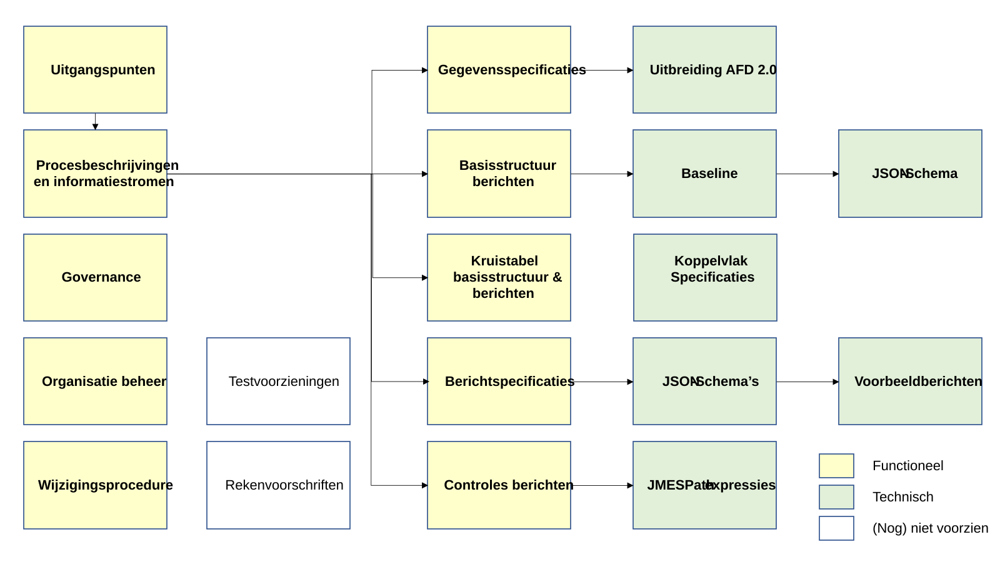
Figure 14 - Components of the standard in context
| Nr. | Onderdeel standaard | Toelichting |
|---|---|---|
| 1 | Uitgangspunten | De belangrijkste uitgangspunten bij de ontwikkeling, opzet en besturing van de standaard. |
| 2 | Procesbeschrijvingen | Procesbeschrijvingen zijn gestructureerde beschrijvingen die de stappen, activiteiten en betrokken elementen van de specifieke ketenprocessen en informatiestromen in detail uitleggen. We gebruiken deze beschrijvingen om een duidelijk begrip te verschaffen van hoe de processen werken en welke informatiestromen aan de orde zijn. In dit geval is vooral het onderscheid tussen flexibele en solidaire premieregeling relevant. |
| 3 | Governance | Governance gaat over het optimaal inrichten van de organisatie van de community rond de standaard. Duidelijk moet zijn wie beslist over wat uitgevoerd wordt met betrekking tot standaarden, en wie beslist hoe dit wordt uitgevoerd. Onderdeel is het huishoudelijk reglement van de klankbordgroep en de eventuele tijdelijke werkgroepen. |
| 4 | Organisatie beheer | Beheer gaat in op de beheersmatige processen rondom de standaarden. Het omvat alle activiteiten gericht op het aanpassen, uitbreiden, doorontwikkelen, beschikbaar stellen en houden van een (set van) berichten die steeds past bij de actuele behoefte van de belanghebbenden. |
| 5 | Wijzigingsprocedure | Wijzigingen op de standaard raakt meerdere belanghebbenden. In de procedure van wijziging zijn hierom de belangen van alle deelnemende partijen vertegenwoordigd. Verzoeken en voorstellen voor wijzigingen zullen een afgesproken procedure worden behandeld. |
| 6 | Gegevensspecificaties | In de gegevensspecificaties is de betekenis van de gegevenselementen beschreven en zijn de onderlinge verbanden beschreven. Gegevenselementen zijn entiteiten, attributen en codelijsten. In de gegevensspecificaties is de afbeelding naar AFD 2.0 opgenomen. Hierdoor is duidelijk wat ontbreekt. Voor de ontbrekende elementen is een voorzet gedaan in AFD 2.0 termen. |
| 7 | Basisstructuur berichten | Basisbericht met de basisstructuur voor een set berichten. In de basisstructuur staat een opsomming van de entiteiten/attributen en de bijbehorende hiërarchische structuur. De beschrijving van dit basisbericht kan gebruikt worden om een baseline te maken. |
| 8 | Kruistabel basisstructuur en berichten | Een kruistabel tussen de basisstructuur en de berichten. Per bericht is in de tabel aangegeven welke entiteiten/attributen van toepassing zijn. Hierbij is het aantal herhalingen (entiteiten) aangegeven en ook welke attributen verplicht gevuld moeten worden. Het is tevens mogelijk selecties uit codelijsten te maken, dat wil zeggen aan te geven welke codewaarden van toepassing zijn. |
| 9 | Berichtspecificaties | De specificaties zijn gebaseerd op de gegevensspecificaties. In deze berichtspecificatie wordt dit vertaald naar een hiërarchische berichtstructuur. Onderdeel van de set berichtspecificaties is het responsebericht. Dit moeten we nog opstellen. Ieder bericht kent een algemene sectie waarin onder meer staat aangegeven wie de zender/ontvanger is van het bericht. |
| 10 | Berichtcontroles | Een specificatie van alle controles op de berichten, bijvoorbeeld verbandcontroles. Het is een optie deze controles in machine leesbare vorm uit te leveren, maar in eerste instantie is dit niet noodzakelijk. |
| 11 | Uitbreiding AFD 2.0 | Uitbreiding van AFD 2.0 met gevraagde gegevenselementen. AFD 2.0 kan op verzoek van belanghebbenden maandelijks uitgebreid worden. |
| 12 | Baseline | Dit is het basisbericht dat in AOS wordt geïmporteerd. Daarna kunnen AFD-definities gemaakt worden. |
| 13 | Schema's | JSON-Schema of XML-Schema per bericht/basisstructuur. Onder meer om berichten te kunnen valideren. AOS levert JSON-schema's op basis van AFD 2.0 berichten en AFD-definities. |
| 14 | Handleiding events | Voorbeelden van het afhandelen van specifieke situaties. De situaties laten zien hoe de standaard toegepast moet worden. Voorbeeldberichten zijn onderdeel van de handleiding events. |
| 15 | Koppelvlakspecificaties | Bij geautomatiseerde koppelingen tussen gedistribueerde systemen (machine-‐machine) is sprake van een interface waarmee communicatie mogelijk wordt gemaakt. Zo'n interface wordt een koppelvlak genoemd. De beschrijving van een koppelvlak noemen we koppelvlakspecificaties. Voorbeelden:
Onderdeel van de koppelvlakspecificaties kunnen instructies zijn over de (data)beveiliging. Opmerking: koppelvlakspecificaties hebben Duco/Gerhard niet toegezegd. Als hier vraag naar ontstaat, dan pakken we dat op. |
| 16 | Testvoorzieningen | Voorzieningen om de ontwikkelaars te ondersteunen bij het implementeren van de berichten/koppelvlakspecificaties. Onderdeel kan een generieke set zijn met testgegevens. |
| 17 | Rekenvoorschriften | Instructies om berekeningen uit te voeren. De berekeningen zijn van toepassing voor gegevenselementen in de berichten. |
Message validations
Integrity constraints are recorded in JMESPath and apply to the message for which they are written. Validations that span multiple messages — where other messages or back-office information is needed — fall outside the scope of these validations.
JSON schemas
The JSON schemas are in principle self-explanatory, but some clarification may be useful because these schemas are also split in JSON technology. This means that in addition to the expected entities and entity types such as 'party' and 'pension.scheme', there are also certain key elements such as "$defs", "type", "properties", "additionalProperties" and "required".
From JSON Schema Draft 2020-12, this is called "$defs". In older versions (draft-07, 2019-09), the term "definitions" was used.
These properties and specifications that apply to, for example, 'commonFunctional', are not all grouped around 'commonFunctional', but are distributed across the JSON schema. The main thing to note is that this distribution is not arbitrary, but follows from the different types of properties.
Chapter 8.4: Translation Table
8.4 Translation Table from Functional Attributes to AFD 2.0 Attributes
Note: The translation table below is in Dutch. It maps functional attribute names from the consultation report to the final AFD 2.0 data element names.
NL → EN Legend for table headers:
Dutch English Attribuutnaam Functioneel Functional Attribute Name AFD 2.0 entity.entitytype AFD 2.0 entity.entitytype AFD 2.0 attribuutnaam AFD 2.0 attribute name Omschrijving Description
In the consultation report, different attribute names were used in various places than in the final AFD 2.0 model. Below is an overview of the functional attribute names and the final AFD 2.0 data element names.
| Attribuutnaam Functioneel | AFD 2.0 entity.entitytype | AFD 2.0 attribuutnaam | Omschrijving |
|---|---|---|---|
| Transfer ID | commonTechnical.default | messageId | Unieke berichtidentificatie |
| Pensionfund ID | party.pensionProvider | puvCode | ID van het pensioenuitvoerder (PUV-code) / Unique reference key assigned to an entity. (NL: Entiteitsreferentie is een unieke referentie sleutel die aan een entiteit wordt toegekend.) |
| Pension scheme ID i | pension.scheme | refKey | ID van de pensioenregeling / (Unique reference key assigned to an entity. (NL: Entiteitsreferentie is een unieke referentie sleutel die aan een entiteit wordt toegekend.)) |
| Capital i | pension.scheme | startAmount | Totaal pensioenvermogen per startdatum |
| Portfolio | pension.scheme | tradingPortfolioId | Portefeuille ID van de custodian (bewaren en beheren van financiële activa) |
| Capital date i / Start date PUO admin / Start date Investment Report | financialInformation.reportingPeriod | startDate | Begindatum van de gegevensperiode waarop de aanlevering vanuit de PUO wordt gebaseerd of Peildatum |
| End date PUO admin | financialInformation.reportingPeriod | endDate | Einddatum van de gegevensperiode waarop de aanlevering vanuit de PUO wordt gebaseerd |
| Mutations date | financialInformation.reportingPeriod | mutationValuationDate | Datum verwerking mutaties per leeftijdsgroep |
| End date Investment Report | financialInformation.reportingPeriod | endDate | Einddatum van de gegevensperiode waarover rendement wordt gerapporteerd |
| Trade date | financialInformation.reportingPeriod | tradeDate | Gewenste handelsdatum |
| Settlement date | financialInformation.reportingPeriod | investmentOrderSettlementDate | Datum waarop de volledige cyclus van de beleggingsorder afgewikkeld moet zijn |
| Projection date | financialInformation.reportingPeriod | projectionDate | Datum van de projectie van pensioenuitkeringen |
| instruction date | financialInformation.reportingPeriod | instructionDate | Instructiedatum (datum van de bestelling verzonden door de PUO) |
| Estimation date | financialInformation.reportingPeriod | unitValueEstimationDate | Geeft de datum aan waarop de voorlopige unitwaarde (belegginspool) is bepaald |
| Valuation date | financialInformation.reportingPeriod | participationValuationDate | Prijsdatum participatiewaarde (cohortpool) |
| value date | financialInformation.reportingPeriod | valueDate | Currency date. (NL: Valutadatum) |
| Date | financialInformation.reportingPeriod | positionDate | De datum waarop de posities in de beleggingsadministratie zijn vastgesteld |
| Value | financialTransaction.payment | amount | Bedrag in valuta |
| currency i | financialTransaction.payment | currencyType | Valuta |
| IBAN debet i | financialTransaction.payment | collectionAccountIban | IBAN-nummer van debet rekening |
| Description i | financialTransaction.payment | description | Omschrijving van de transactie (betaling) |
| IBAN credit i | party.creditor | collectionAccountIban | IBAN-nummer van credit rekening per regeling |
| Counterparty i | party.creditor | collectionAccountInNameOf | Naam van de tegenpartij per regeling |
| BIC i | party.creditor | collectionAccountBic | Business Identifier Code (BIC) per regeling |
| BIC-correspondent i | party.creditor | collectionAccountBicCorrespondent | BIC-correspondent per regeling |
| Contribution i | financialTransaction.cashflow | contributionAmount | Som van inleg |
| Contribution date i | financialTransaction.cashflow | contributionDate | Datum van ontvangst van de inleg |
| Withdrawal i | financialTransaction.cashflow | withdrawalAmount | Som van de uitstroom |
| Withdrawal date i | financialTransaction.cashflow | withdrawalDate | Datum waarop (uiterlijk) de liquiditeiten ten behoeve van de onttrekking zijn vrijgemaakt |
| Net contribution/withdrawal i | financialTransaction.cashflow | netAmount | Som van inleg en onttrekkingen per regeling (net). Een negatief bedrag is een (netto) withdrawal. / Verschil tussen inleg en onttrekking. Een negatief bedrag is een (netto) onttrekking.) |
| Net contribution/withdrawal date i |
financialTransaction.cashflow | netDate | Datum waarop gesaldeerde instroom en uitstroom wordt gefaciliteerd / Datum waarop het saldo van inleg en onttrekking is bepaald |
| Cohort ID i, k | financialTransaction.payment | refKey | ID van de expected payment |
| Expected pension payment Date i, k | financialTransaction.payment | expectedPensionPaymentDate | Pensioenuitkeringsmoment |
| Hedged expected pension payment i,k | financialTransaction.payment | hedgedExpectedPensionPaymentAmount | Af te dekken kasstroom over alle cohorten |
| Cohort expected pension payment i,j,k | financialTransaction.payment | amount | Geprojecteerde uitkering over alle cohorten |
| Cohort ID i, k | pension.cohort | refKey | ID van het cohort |
| Cohort Capital i,k | pension.cohort | startAmount | Pensioenvermogen van het cohort per begindatum |
| Net contribution/withdrawal I,k | pension.cohort | netAmount | Som van inleg en onttrekkingen per cohort. Een negatief bedrag is een (netto) onttrekking.) |
| Cohort contribution i,k | pension.cohort | contributionAmount | Instroom te beleggen door de fiduciair manager |
| Cohort withdrawal i,k | pension.cohort | withdrawalAmount | Uitstroom te beleggen door de fiduciair manager |
| Cohort return rate protection i,k | pension.cohort | protectionReturnPercentage | Het behaalde beschermingsrendement in percentage over gegevensperiode per regeling en per cohort |
| Cohort return rate excess i,k | pension.cohort | excessReturnPercentage | Het behaalde overrendement in percentage over gegevensperiode per regeling en per cohort |
| Cohort return protection i,k | pension.cohort | protectionReturnAmount | Het behaalde beschermingsrendement in valuta van de regeling over gegevensperiode per regeling en per cohort |
| Cohort return excess i,k | pension.cohort | excessReturnAmount | Het behaalde overrendement in valuta van de regeling over gegevensperiode per regeling en per cohort |
| Hedged expected pension payment i,k | financialTransaction.payment | hedgedExpectedPensionPaymentAmount | Af te dekken kasstroom |
| Cohort expected pension payment i,j,k | financialTransaction.payment | amount | Geprojecteerde uitkering |
| Cohort ID i, k | pension.cohortPool | cohortRef | Geeft aan op welk cohort in de regeling de cohortpool-gegevens betrekking hebben |
| Cohort Inflow i-k (1) | pension.cohortPool | inflowPremiumAmount | Premie-inleg per cohortpool per regeling |
| Cohort Inflow i-k (2) | pension.cohortPool | inflowRebalanceAmount | Geldbedrag van rebalance transacties per cohortpool per regeling |
| Cohort withdrawal i,k | pension.cohortPool | numberOfNewParticipations | Nieuwe uit te geven participaties in cohortpool per regeling (instroom) |
| Number of units, i,k | pension.cohortPool | numberOfParticipations | Aantal uitstaande units (participaties) in de Cohortpool |
| Cohort rebalance i,k | pension.cohortPool | numberOfRebalanceParticipations | Rebalance participaties per cohortpool per regeling (bij overgang van een cohortpool naar een ander cohort) |
| Cohort Capital i,k / Cohort value i, k | pension.cohortPool | participationsSummedValueAmount | Waarde per cohortpool (som participatiewaarde) per participationValuationDate |
| Pool ID i,j | investment.pool | refKey | ID van de beleggingspool per regeling |
| Market value portfolio | investment.pool | marketValueAmount | Marktwaarde per portefeuille per regeling in currencyType |
| Pool value i, k | investment.pool | unitsSummedValueAmount | Waarde per beleggingspool(unitwaarde) |
| Market value instrument | investment.pool | marketValueAmount | Marktwaarde van de beleggingspool in currencyType van de pool |
| Preliminary market value i, k | investment.pool | preliminaryMarketValueAmount | Voorlopige Marktwaarde per portefeuille per regeling in currencyType van de pool |
| Preliminary pool value i, k | investment.pool | preliminaryUnitValueAmount | Dagelijks vastgestelde unitprijs/NAV in currencyType van de pool |
| number of units investment pool i,k | investment.pool | numberOfUnits | Aantal units uitgegeven voor de beleggingspool, |
| currency i,j | investment.pool | currencyType | Valuta van de pool |
| Transaction description i,j, k /Description | investment.pool | description | Beschrijving |
| Dummy cash ID | investment.pool | dummyCashId | ID voor dummy cash instrument per beleggingspool per regeling per cohort(pool) |
| Sell buy ID i,j, k | investment.pool | buySellId | Aan- verkoopindicator; ID voor aan-/verkoop per beleggingspool per regeling per cohort |
| Amount i,j, k | investment.pool | tradeQuantity | Aantal te verhandelen stukken (units) van de transactie |
| Unit value i,j, k | investment.pool | unitPrice | Unitwaarde (/prijs) per beleggingspool per regeling per cohort |
| FX rate i,j, k | investment.pool | currencyExchangeRate | FX rate per beleggingspool per regeling per cohort |
| Value i,k | investment.pool | tradeValueAmount | Waarde transactie per beleggingspool per regeling (gesommeerd over cohorten) |
| portfolio ID i,n | investment.portfolio | refKey | ID Beleggingsportefeuille / Unique reference key assigned to an entity. (NL: Entiteitsreferentie is een unieke referentie sleutel die aan een entiteit wordt toegekend.) |
| Total Market Value start I,n | investment.portfolio | startAmount | De waarde van de Total Market Value aan het begin van de gegevensperiode |
| Net contribution/withdrawal I, n | investment.portfolio | netAmount | Som van inleg en onttrekkingen per regeling (net). Een negatief bedrag is een (netto) withdrawal |
| Total Market Value end I,n | investment.portfolio | endAmount | De waarde van de Total Market Value aan het eind van de gegevensperiode. Per regeling en beleggingsportefeuille |
| Return rate i,n | investment.portfolio | returnPercentage | Het behaalde rendement in percentage over gegevensperiode per regeling en per beleggingsportefeuille |
| Return i,n | investment.portfolio | returnAmount | Het behaalde rendement in valuta van de regeling over gegevensperiode per regeling en per beleggingsportefeuille |
| Identifier | investment.investmentDetails | refKey | Identifier (bijvoorbeeld ISIN of interne code) |
| Fund Name i | investment.investmentDetails | description | De naam van de belegging / de officiële naam van het fonds / van het instrument |
| Local Price i,j, k | investment.investmentDetails | currencyType | Valuta van het instrument |
| Total holdings i,j, k | investment.investmentDetails | numberOfHoldings | Aantal holdings per instrument per regeling per beleggingsportefeuille |
| Local Price i,j, k | investment.investmentDetails | localPrice | Prijs per instrument in originele valuta per regeling per beleggingsportefeuille |
| Local Value instrument i,j, k | investment.investmentDetails | localValueAmount | Totale marktwaarde in originele valuta per instrument per regeling per beleggingsportefeuille |
| Result i,j, k | investment.investmentDetails | result | Ongerealiseerd resultaat per instrument per regeling per beleggingsportefeuille |
| Accrued Interest i,j, k | investment.investmentDetails | accruedInterest | Opgelopen rente per instrument per regeling per beleggingsportefeuille |
| Portfolio weight i,j, k | investment.investmentDetails | poolPercentage | Gewicht in de portefeuille per instrument per regeling per beleggingsportefeuille |
| FX rate i,j, k | investment.investmentDetails | currencyExchangeRate | FX rates per instrument per regeling per beleggingsportefeuille / koers per positionDate |
| Trade date / Transaction date | financialTransaction.trade | tradeDate | Gewenste handelsdatum |
| Adj Trade i, j | financialTransaction.trade | adjustmentIndicator | Aangepaste trade instructie |
| Buy/Sell i,j | financialTransaction.trade | buySellId | Aan- verkoop- switchindicator |
| Amount | financialTransaction.trade | tradeAmount | Bedrag van de aankoop in de valuta waarin de belegging luidt |
| Quantity | financialTransaction.trade | tradeQuantity | Aantal te verhandelen stukken (units) van de transactie |
| Price i,j | financialTransaction.trade | tradePrice | Aankoopprijs / koers |
| Switch type | financialTransaction.trade | switchType | Type switch; one-day of sequential |
| Counterparty i,j | financialTransaction.trade | counterparty | Transfer Agent; de partij die de aankoop/verkoop verricht |
| Broker i,j | financialTransaction.trade | broker | Effectenmakelaar die beleggingsorders uitvoert namens klanten op de markt |
| Interest i,j | financialTransaction.trade | interestAmount | Bedrag aan van toepassing zijnde rente |
| Commission i, j | financialTransaction.trade | commissionAmount | Vergoeding voor het uitvoeren van de transactie |
| Clearing broker i,j | financialTransaction.trade | clearingBroker | Effectenmakelaar verantwoordelijk administratieve en financiële afwikkeling van de transactie |
| Cash account i,j | financialTransaction.trade | clearingBrokerCashAccount | Geldrekening (IBAN) bij de clearingbroker op naam van de Pensioenuitvoerder |